-
- 【2017年12月1日】
- 絵でわかる人工知能 明日使いたくなるキーワード68【2017年 三宅陽一郎】
- 掲載キーワードの系統図

- 系統図テキスト
- 記号的人工知能
- IBM Watson
- 人狼知能
- LOA
- セマンティック
- 人工無能
- 自動会話システム
- オントロジー
- 探索エンジン
- エキスパートシステム
- 自然言語処理
- 検索アルゴリズム
- 最良優先検索
- 知識指向
- 知識表現
- シンポルグラウンディング問題
- 脳回路型
- ディープラーニング
- ネオコグニトロン
- ヘップ則
- ニューラルネットワーク
- パーセブトロン
- 社会的脳
- ミラーニューロン
- シグモイド関数
- 全脳アーキテクチャ
- シンポリズムとコネクショニズム
- 学習
- ニューラルネットワーク
- パーセブトロン
- 社会的脳
- ミラーニューロン
- シグモイド関数
- ゲームAI
- 機械学習
- 強化学習
- 教師なし学習
- ベイズの定理／
- ベイジアンネットワーク
- 隠れマルコフモデル
- 協調フィルタリング
- ゲーム
- AlphaGo
- ディープQネットワーク
- 囚人のジレンマ
- 人工生命
- モンテカルロ木探索
- 完全情報ゲーム
- ゲーム理論
- 人工知能基礎問題群
- シンポルグラウンディング問題
- チューリングテスト
- フレーム問題
- ダートマス会議
- 全脳アーキテクチャ
- シンポリズムとコネクショニズム
- 古典的Al
- 人工知能と自然知能
- 心身問題、心脳問題
- 強いAl、弱いAl
- 中国語の部屋
- 人工知能と倫理
- シンギュラリティ
- 収穫加速の法則
- 協調知能
- スマートシティ
- 自動走行
- モンテカルロ木探索
- 完全情報ゲーム
- ゲーム理論
- クラウド上の人工知能
- マルチエージェント
- エージェント指向
- 分散人工知能
- データマイニング
- データ解析
- データマイニング
- ベイズの定理／
- ベイジアンネットワーク
- 隠れマルコフモデル
- 協調フィルタリング
- スパース・コーディング
- 数学
- カオス
- 最急降下法
- 局所解
- ファジー理論
- 意思決定
- 意思決定アルゴリズム
- 反射型Al・非反射型Al
- タスクベース
- ステートベース
- ゴールベース
- シミュレーションペース
- ケースベース
- ピヘイピアペース
- ルールベース
- ユーティリティベース
- サブサンプション・アーキテクチャ
- ファジー理論
- 未来
- AlphaGo
- ディープQネットワーク
- スマートシティ
- 自動走行
- 第1章人工知能ってなんだろう？
- 第2章社会と歴史の中の人工知能
- シンギュラリティ
- 収穫加速の法則
- ダートマス会議
- 全脳アーキテクチャ
- 自動走行
- スマートシティ
- 社会的脳（ソーシャルブレイン）
- 人工知能と倫理
- 古典的Al
- 第3章学習・進化する人工知能
- ディープラーニング
- 機械学習
- 教師なし学習の重要性
- 強化学習
- 遺伝的アルゴリズム
- 人工生命
- 第4章人間を超える人工知能
- IBM Watson(ワトソン）
- AlphaGo
- エキスパートシステム
- 探索エンジン
- 第5章人間の脳を真似る人工知能
- ディープQネットワーク
- ネオコグニトロン
- ミラーニューロン
- ニコーラルネットワーク
- パーセブトロン
- ヘッフ則
- シグモイド関数
- 第6章ビッグデータと予測する人工知能
- データマイニング
- 協調フィルタリング
- 検索アルゴリズム
- 叢良優先探索
- クラウド上の人工知能
- スパース・モデリング／スパース・コーディング
- マルコフモデル
- 隠れマルコフモデル
- ベイズの定理／ベイジアンネットワーク
- 第7章ゲームの中の人工知能
- ゲームAl
- 人狼知能
- 完全情報ゲーム／不完全情報ゲーム
- ゲーム理論／囚人のジレンマ
- モンテカルロ木探索
- 第8章人工知能のさまざまなかたち
- エージェント指向
- 知識指向
- 分散人工知能
- サブサンブション・アーキテクチャ
- マルチエージェント
- 第9章おしゃべりをする人工知能
- 自動会話システム
- 人工無能
- オントロジー
- セマンティック
- LDA
- 知識表現
- 自然言語処理
- 第10章意思決定する人工知能
- 反射型Al/非反射型Al
- 意思決定アルゴリズム
- 第11章生物を模倣する人工知能
- ポイド
- サイバネティクス
- 画像認識
- 群知能
- 第12章人工知能の哲学的問題
- 人工知能と自然知能
- シンポリズムとコネクショニズム
- チューリングテスト
- フレーム問題
- 心身閤題、心脳閥題
- 強いAl、弱いAl
- シンポルグラウンディング問題
- 中国語の部屋
- 第13章人工知能が用いる数学
- 最急降下法
- 局所解
- ファジー理論
- カオス
- 終章人工知能にできること、できないこと
- 人工知能「超入門」ディープラーニングの可能性と脅威（Impress QuickBooks)
- 特徴抽出能力を得た人工知能
- 人間が教えなくても自ら特徴を抽出して理解することができる
- ディープラーニングとニューラルネットワーク
- ディープラーニングは、「適切な特徴抽出能力をもつ教師なしニューラルネットワークを多層にして構築したもの」
- よく使われる情報や関連性の高い情報を扱う細胞同士のつながりは強化される一方で、使われないものや関連性の低いものはつながりが弱くなる
- 重要な情報は強く、重要でない情報は細く。大切なのは情報と情報の関連性
- 多層に重なるニューラルネットワーク
- 情報に対して「関連性」や「重要性」を踏まえて、情報を扱っていく
- 入力層、出力層、その中間で実質的な思考を行う部分が「隠れ層」
- 教師あり学習から教師なし学習へ
- 人間が人工知能に正解を教え、設定を変更する形で正解を教える「教師あり学習」
- 設定の変更が技術者のスキルに依存する
- 学習に使える情報はインターネットを通して無数に手に入るようになり、高性能な演算装置を使えば短時間で学習が終わる
- ビッグデータと高性能な演算装置を使って何万回と学習させる
- 人間に近い学習過程を辿れるようになった人工知能
- 人間は教師に教わって学習することもあれば、自分で気づいて学ぶこともある。これは人工知能も同じ
- ディープラーニングはどうやってモノを理解するのか
- ニューラルネットワークを持った回路で多数の班を作り、班ごとにシンプルな役割を与え、各班に順番にタスクをこなさせる思考方法がディープラーニング
- ディープラーニングは囲碁やチェスをどう指すのか
- たくさんの棋譜を見ていけば、勝った時に共通する状況というのが多かれ少なかれ必ず存在する
- 特徴抽出力を用いて、「勝ちやすい戦い方」の特徴を抽出する
- 今までの棋譜や模擬戦から抽出した「勝てる局面」や「勝てる形」を作るために働く
- 人工知能が、「なんとなく」とか「感じる」ことはないが、少なくとも「勝利と関連性の高い手」を抽出していることは間違いない
- ディープラーニングの未来
- 情報の関連性を理解して特徴を見出すというのは非常に人間らしい「理解」の方法
- 次第に人間が知らない特徴に人工知能が気づくようになり、人間の代わりに名前を付けるようになるかも知れない
- ディープラーニングを超える人工知能の技術が生まれてくる可能性もありますし、画像や文章を認識できるようになるだけでも、画像や文書の分別などを仕事とする人はいらなくなる。簡単なタスクを人工知能がこなせるようになるだけでも、人間の仕事が減ることは間違いない
- 人工知能で変わる社会、人工知能の脅威
- 人工知能がより賢い人工知能を生み出し続ける「シンギュラリティ（技術的特異点）」が起こるかも知れない
- 今まででは考えられなかったような知的労働の世界までロボットが進出してくることになる
- 大きく分けて4分野の仕事が消える
- 創造的活動や学問分野は人工知能で代替することは難しいし、人工知能が代替してもどこかに人間の手が入るモノ。
- まずは「マニュアル化がしやすい業務」や「同一ルーチンの仕事を繰り返す業務」
- 人工知能にはできない立ち位置を確保することが大切
- 仕事の補佐がメインとなる仕事は奪われる
- 「指示された業務を忠実にこなす」タイプの仕事
- ディープラーニングは「普通と違う何か」を見つけ出すことが得意なので、書類上の不備を見つけるのは簡単
- 手間のいる仕事は人工知能にやってもらい、人既往知能とスタッフの間に立つような事務員を目指すとよい
- サービス業に関しては人間であることが重要
- 人工知能にはまねのできない貴重な立場を得る
- 「言われたことをするだけの仕事」で終わらせない
- 「言われる前にできる」ようになれば人工知能に代替できないユニークなスキルとなる。模範的なサポートを提供することで、人工知能に「教える」「管理する」立場になるというのも一つの手。
- 現状を維持するための仕事は消える
- コミュニケーションスキルを磨きつつ、いざという時に正しい対応が取れるように鍛錬を怠らないようにしたい
- ネットで少し検索すればわかることは人工知能にもわかる。高い「理解力」を必要とする技術があるとよい
- オペレータ系の職種も場合によっては人工知能に代替される
- ロボットを管理する仕事が増えてくる
- 何かを運ぶだけの仕事は消える
- 扱いの難しい荷物を運ぶ仕事
- モノをただ作るだけの仕事は奪われる
 マニュアル通りにモノを作る仕事は、真っ先に人工知能とロボットに代替される
マニュアル通りにモノを作る仕事は、真っ先に人工知能とロボットに代替される- パワードスーツのような「人間を補助する機械」も増えており、人間自身のパフォーマンスが向上する方向性も見えている
- 新しく登場する技術を巧みに用いるためのスキルを磨くのが良い
- やはり人工知能や機械を管理する立場の人間は残るし、経営や営業など「作ったモノをどうするか」という立場の人間が人工知能に置き換わるのは難しい
- 人工知能や機械を管理する立場の人は残る。経営や営業などの「作ったモノをどうするか」という立場の「人間が人工知能に置き換わるのは難しい
- 「何を作るか」「どう作るか」など、考える立場を目指すのが良い
- モノの設計や企画という部分はしばらく人間の仕事になる
- マニュアルとルーティンの囚われない仕事をする
- マニュアルがなかったとしても、ルーティンワーク化してしまった仕事は人工知能が学習してマニュアルがなくても模倣することができるようになる
- 進歩した人工知能は教えられなくても自ら学習し判断し成長することができるため、最初はできなかったことでもすぐにできるようになる
- 故障して個体が変わっても経験を引き継げる
- マニュアルやルーティンに拘りすぎない働き方を模索していくことが必要
- マニュアルやルーティンそのものを進化させることができれば、人工知能を超えることができるはず
- 人間だからこそできる仕事ってなに？
- 人工知能の得手不得手、人工知能の弱点
- 一定のコミュニケーション能力が必要な仕事、責任を取る必要がある仕事
- 指示された理由や仕事が生まれる理由について考える力がないため、「意図を汲む仕事」や「人間の考えを読み取る力」を必要とする仕事は苦手
- 新しいものを生み出せる仕事をするか、人間らしい温かみのある仕事ができなければ仕事を失うことになる
- 創造的な仕事は生き残る
- 人々が今までに経験したことのない何かを提供する
- 顧客の考えや要望を理解したうえで、それを超えるモノを提案できなければデザイナーとして生き残っていくのは難しい
- 執筆関係の仕事では企画やデザインの部分が含まれることもあり創造的な、仕事の代表格と言えるかもしれない
- 「よい企画を真似る」だけの企画は人工知能の仕事。
- 人間の求めるモノや修正を正しく理解できていないと「良い企画」は出せない
- 芸術や芸能関係の仕事は生き残る
- 人間の感性や感覚に訴えるモノが多く、人間の特性や文化を正しく理解していなければこの仕事はできない
- Pepperのように人とのコミュニケーションを売りにした機械も現れている。テレビに出るのは人間の仕事だと言えなくなるかもしれない
- 人気のある作品や変わった作品を見つけて、そこから新しい映像作品やアイデアを提供するような人工知能がでてくると、映像作品作りに人工知能が深く関わってくる可能性がある
- ぼーかロイドのような存在が話題になった。ロボットを使って作曲家と作詞家以外はいらない音楽も作れているのは一つの事実
- 人間の芸術とは全く違うアプローチで、人間には作れない作品を作ってしまう可能性もある。人間の芸術が「古臭い」といわれないように、新しい道を模索していきたい
- 美容師の感性に任せるのではなく、決まった形に向けて仕上げるのであれば人工知能にも可能
- 進化と発展を生み出す仕事は生き残る
- 「人類・社会・自然を理解し、変化を生み出す仕事」は人工知能に代替できない部分が多い
- 試行錯誤という点は人工知能とロボットのスピードがものをいう
- 助手の仕事がなくなって下手な雑務に追われなくなる分、自分の仕事に専念できるのは大きなメリット
- 経営者が人工知能というのは、最終的な責任の所在もわからなくなるために難しい
- 情報提供やアドバイスを行うツールとして人工知能が活躍する場面は大いにある。現場から上がってくる膨大なレポート全てに目を通して、要約として使えそうな案をピックアップするなどは人工知能の仕事
- 国民の言葉をダイレクトに反映させるツールとして人工知能が使われる可能性はある
- 政治家や裁判官の決断に関する評価を、ネットワークと人工知能を介する形で国民に委ね、実質的hな政治は決断を国民が直接絡むシステムを作り出すことも可能
- 医療や福祉関係の仕事は生き残る
- 人の生活を豊かに健やかにする仕事は生き残る
- 薬剤師や検査技師のような患者と関わりの薄い業種に関しては、ある程度人工知能やロボットによる代替が進む可能性がある
- 介護士や補遺ⓚ儒y歳の仕事を人工知能が奪うのではなく、仕事の質を高めるために人工知能とロボットが一翼を担っていくはず
- 質の低い仕事をする人間は淘汰される
- 教育に携わる仕事は生き残る
- 「人に何かを教える仕事」は生き残る
- 基礎的な教育分野は人工知能が教師になることができるかも知れない
- 「なぜできないのか」を想像して教えることは人間でも難しい。まして人工知能だとさらに難しい
- ただ「覚えるだけ」のようなタスクは人工知能にもできる
- 「授業は人工知能」で「質問は教員」のようにタスクを分ける塾や学校が現れる可能性は大いにある
- 訓練系は「動物のトレーナー」や「スポーツや特殊技能のインストラクター」など、人間の訓練はもちろん、動物を訓練するのも人間でなければできないことも多い
- タスクがマニュアル化されても限界がある。コーチングの質を高めさえすれば、まだまだ人間の仕事になるはず
- 特に精神的に未発達な子供の教育に関しては人間でなければ教えられないことも多く、人間性やモラルの教育を人工知能でいっても説得力がない
- 人が人工知能やロボットに勝つためには
- 与えられた仕事をこなすだけではなく、相手が必要としているモノを理解し、要求以上のモノを提供することで人工知能との差別化が図れる
- 人工知能に勝てなくなったと感じたら、早めに人工知能にはできない分野に飛び出す勇気が必要かも知れません
- あとがき
- 全く別の特性を持つ存在が同じ目的に向かって競い合えば、その目的により最適化されたほうが勝つのは当然
- 人工知能を互いに高め合っていけるらライバルだと認め、それでもなお彼らに勝てる分野を見つけられるかどうかが、これからの人間に大切なことなのかも知れない
- よくわかるディープラーニングの仕組み【谷田部卓】
- 過学習と対策
- 過度に教師データに依存した（汎化できていない）状態
- 原因として、教師データが足りなくてデータに偏りがあるため
- ニューラルネットワークの歴史
- ディープラーニング
- 2011年音声認識コンテスト
- 2012年画像認識コンテスト
- ディープラーニングのビジネス（実用化）
- 2種類
- CNN（畳み込みニューラルネットワーク）系
- RNN（LSTM）系
- CNNが得意とする
- パターン認識系
- 精度で既に人間を凌駕
- 自然言語処理系
- 操作系
- ヘルプデスク業務は、数年でディープラーニングもよる自動応答に置き換わっていく
- 文章の自動要約や意味抽出まで進んでいくと、事務職の大半はディープラーニングで置き換えが可能と考えられる
- 自動運転は数年で実用化が始まり、普及も急速に進んでいくはず
- ディープラーニングにおける日本の役割
- 技術を自社だけで囲い込もうとする意識が強すぎるため、研究成果を公開したり、アイデアを募るような研究ができない体質
- 2016年9月末、Facebook, Amazon, Google, IBM, Microsoftの5社が、AIに関して歴史的な提携を発表
- エンジニアを囲い込んだりせず、基礎研究の段階から幅広い英知を求めていくべき
- AIの学習方法と幼児教育のアナロジー
- 偏りのないあらゆるパターンで、かつ大量の訓練データを与えることにより改善できる
- ディープラーニングは、その原理を生物の脳に求めており、ニューロンとシナプスを模したものがその原型
- 過学習が生じる前の幼児の段階で、出来る限り様々な体験をさせるべき
- 実体験が無理なら、色々な絵本を読み聞かせることで、たとえ仮想でも体験の幅が格段に広がり、過学習を生じさせない柔軟な頭脳になるかもしれない
- 視覚や聴覚から入力されてくる空間的・時系列的な情報をパターン化・抽出化することで大幅に情報圧縮し、有限の脳に大量の情報を詰め込めることができるようになった。
- 「言語」は、その抽象化された情報、すなわち記録を外部化・表出したもの。さらに「文字」の発明が、記憶を外部に長期間記録することを可能とし、より大量の情報を人類が共有できるようになった
- 人間は、言語機能はまだDNAに組み込まれていないか、言語機能をハードウェアとしてDNAに取り込むことにより、柔軟に変更可能なソフトウェアとして、後から学習できるように機能分離されているのかもしれない。
- 「水を得た魚のように」などとアナロジーを好んで使う。「ディテールをそぎ落として抽象化した言葉」。パターンのほうがイメージしやすく、情報量が少ないほうがマッチングが容易「
- 大人になると抽象的概念を使って複雑な事象も考えることができるようになる。
- 知識や経験を積むことで、ニューラルネットワークの階層が深くなっていくかのようです。人間も過学習におちいらないように、すなわち「偏見」をもたないように、幅広く見識を積むべきなのでしょう
- ビジネスで使う機械学習【谷田部卓】
- 機械学習の実例
- 例えばEメールのスパム判定は機械学習で迷惑メールを自動判別
- 入力単語を予測して変換。これも機械学習
-
- 予測：最も実用化が進んでいる領域
- 識別：ディープラーニングの登場により、一気に精度が高まり、実用化が急速に始まったばかりの領域
- 実行：自動車の自動運転技術がAI技術の応用
- 日本語のAI会話が急速に発達したので、事前言語分野では一気に実用化が始まる
-
- 機械学習の種類と手法
- 教師あり学習：まず様々な種類の大量にある正解付きのデータを分析し、予測モデルを作成する
- 教師なし学習：未知のデータのため、どの観点から分析すべきか不明な場合の方法
- 強化学習：試行錯誤を繰り返しながら、目的に遭った結果を得られると「報酬」が得られ、最も「報酬」が得られるように学習していく方法
-
- 回帰：売上予測などのような、過去の実績ある数値から、未知の数値を予測する際に用いられる
- クラス分類：迷惑メールの判定などのように、データを適切なクラスに割り当てる手法で教師ありの機会学習
- クラスタリング：値やデータの類似性をもとに、データを自動的にグループ分けする手法。クラス分類と似ているが教師なし学習
- 情報圧縮・次元圧縮：かつて顔認証で用いられてきた手法で、データの特徴的傾向をできる限り残しながら、データ総量を減らす
- レコメンデーション：購入履歴から興味がありそうな商品を推測します
- アルゴリズムの種類は、長い研究の中から多数の種類が考え出されてきた。全ての課題に汎用的に利用されるアルゴリズムは、現時点で存在しない。このため利用目的に適したアルゴリズムを見つけるためには、試行錯誤しながら決定する必要がある
- 機械学習の原理
- 機械学習の基本は統計学にあり、その出力データはすべて確率で表現される
-
- 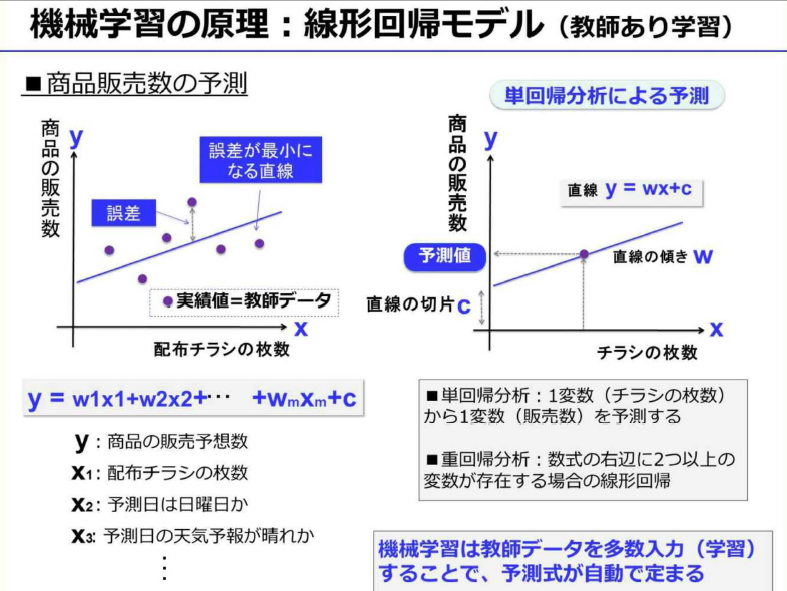
- 機械学習では、アルゴリズムとは数式のことで、教師データとは実績値のこと
-
- 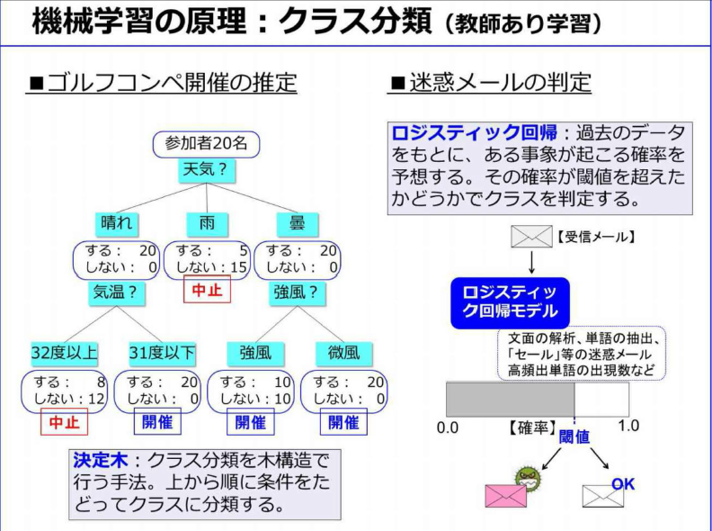
- クラス分類は、学習速度は早いが、一般的には精度があまり良くない
- ロジスティック回帰は、過去のデータをもとに、あるクラスに該当する確率を予測。この確率に対して閾値を設定し、クラスを割り当てる手法
- 迷惑メールの判定閾値を上げると誤判定は減るが判定漏れが増えるトレードオフの関係
- ロジスティック回帰の判定式をクラスごとに用意すると、多クラス分類が可能となる
-
- クラスタリングとは、正解付データの不要な教師なし学習
-
- 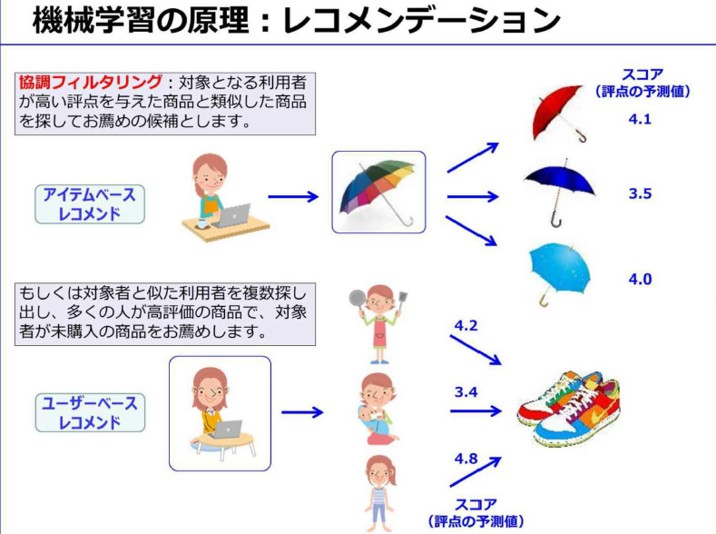
- レコメンデーションは、利用者が投稿したレビュー点数、行動履歴、商品購入の有無かどから、その利用者に「評点」を付ける。その評点から利用者の嗜好を分析して、おすすめ商品を推測するのが「協調フィルタリング」
- 利用者が高い評点を与えた商品と、類似した商品をお勧めるのが「アイテムベースレコメンド」
- 対象者と似た嗜好の利用者を複数選びだし、その利用者の多くが高得点の商品の中で、対象者がまだ購入していない商品をお勧めするのが「ユーザベースレコメンド」
-
- 回帰やクラス分類などの「教師あり学習」の場合は、この教師データをもとに数式の変数（パラメータ）をコンピュータが自動的に決定する
- 教師データに合わせすぎた状態を「過学習」という。これを避けるために、教師データとは別に評価用のデータも用意して、検証する必要がある
- ただし、教師データの件数が膨大であれば、このような過学習は解消する
-
- 自然言語は、人間の長い歴史の中で自然に発展してきたため、プログラミング言語と比べると、曖昧性が非常に高く、自然言語処理という特別な処理が必要になる
- 単語や文章の特徴量。特徴量を数値化することで文章を数値で扱えるようになり、文章のデータ量を大幅に圧縮することができた
- 単語や文章の特徴量は、N-gram処理やTF-IDF処理が一般的。対象文章内では高頻度の単語が特徴的である
-
- 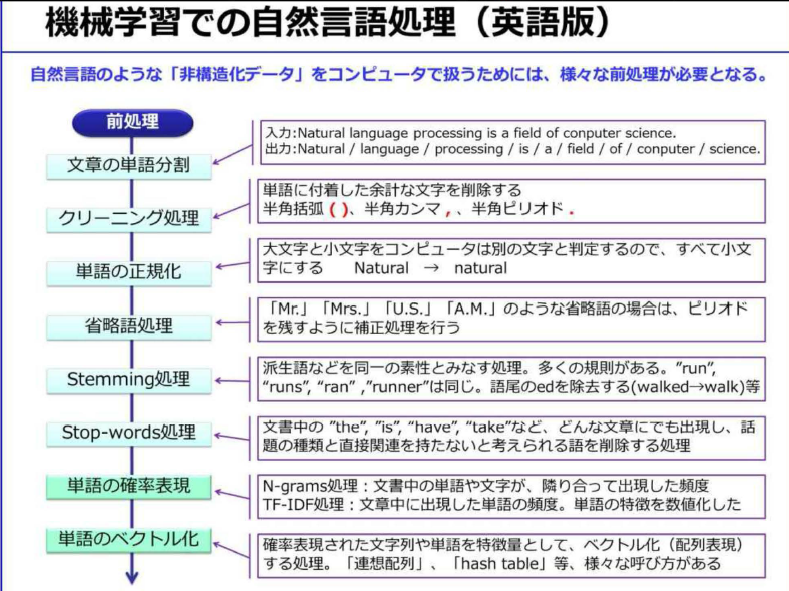
- 文章を単語に分割してクリーニングした後、その文章の特徴量を抽出することでベクトル化
-
- まず国語辞書や文法の知識、一般常識等をデータベース化しておく必要がある
- 多数の解釈の中から最も「妥当な」解釈を判断することをコンピュータに実装するのは難しいこと
- 自然言語処理の難しさの根本原因は、自然言語が本質的に持ち、多様な解釈を可能とする「曖昧さ」ｊにある
- 自然言語処理の最も身近な例は「かな漢字変換」
- 検索エンジンは、自然言語処理のおかげで利用することができ、「機械翻訳」の研究成果で自然言語処理は発達してきたと言える
- 文章から単語を切り出す処理を「形態素解析」
- 「意味解析」、「文脈解析」と進むが、いまだに研究段階にあり制度の良い確立した手法はまだない
-
- 単語分析に加えて「品詞付与」などの処理も行う
- 「形態素解析ソフトウェア」として有名なのがMeCabというオープンソース
- 機械学習のビジネスでの利用
-
- ①研究段階：機械学習は人工知能における研究課題として1960年頃から研究されてきた
- ②実用化段階：近年、成績がよく実績あるMLアルゴリズムは、コンピュータパワーの進化と伴って、大学などの研究機関がOSS化
- OSSのフレームワークが火付け役となって、機会学習は一気に実用化段階に入ってきた
- ③クラウドMLの登場：2014年にIBM WatsonがMLのAPIを公開。2015年から主たるパブリッククラウドで、続々と実用的なMLアルゴリズムがライブラリとしてサポートされる。こうして機械学習は、本格的な実用化段階に突入した
- AIや機械学習の応用先は「予測」、「識別」、「実行」になる。現時点では予測が最も実用化が進んで、応用しやすい分野と言える。識別は比較的専門性が高く、実行は現時点で実用化はあまり進んでいない
- 現状ではアナリストが過去の実績データをもとに、BIツールを用いて経験と勘で行う場合が多い
- 機械学習の利点は、最初に適切な予測モデルを作成すると、その後は専門家の常駐が不要になるところ
- ただし、「教師あり機械学習」の場合は、どの分野でも、その出力精度は教師データの質・量・種類に大きく依存する
- 活用例
- 予測
- ①店舗への来客数の予測
- 最初は、入手可能なあらゆる種類のデータを集めること
- ②売り上げの予測
- 売上データや顧客の平均購入単価、来客数（予測数）、購買率のデータがあれば精度のよい売上予測が可能
- ③顧客の店舗内動線分析
- 品ぞろえや陳列棚の改善により売上アップ
- 店舗内にビデオカメラ、赤外線センサー、レーザーセンサーなどを一定期間設置して、データを収集
- ④工場での作業員動線分析
- 作業工程を効率化、危険エリアに立ち入らないように通路確保
- 作業員にタグをつけたり、スマホを持ってもらい、作業員の位置データを収集
- 作業員全員の総移動量を計測・分析できるので大きな改善効果が見込める
- ⑤ECサイトでの商品レコメンデーション
- 来訪者の行動ログを分析しサイトデザインを改良
- 来訪者特性に合わせたレコメンデーションやバナー広告などきめ細かな制御ができる
- もともとリアル店舗での接客術、つまり優秀な店員のお客様対応を自動化しようとしたもの
- ⑥フライトデータと気象データから飛行機の遅延時間予測
- ⑦路線バスの遅延時間予測
- 曜日と時間帯別交通量データ、これに停車時間の実績データにより予測モデルを構築
- 識別
- 大量にあるデータを複数に分類すること
- ①機器異常や故障の事前検知
- 機器の挙動データを長時間にわたり詳細に収集
- ②SNSでの評判分析
- 非構造化データであるテキストデータを自然言語処理。一般にテキストマイニング用のツールを用いて、アナリストが分析
- テキストを形態素解析し、あらかじめベクトル化してある良い言葉と悪い言葉との類似度を計算
- 十分な数の教師データと「感情辞書」を用意し、再起型ニューラルネットワークなどのアルゴリズムを用いての実験が必要
- ③ソフトウェアの品質判定
- 「可読性」を解析する静的解析ツールから出力されるメトリクスデータで数値化が可能
- このメトリクスデータに、既に品質判定した結果を組み合わせて教師データとする
- それによりソースコードの品質判定を自動で行えるようになる。すでに有効性を確認済
-
- 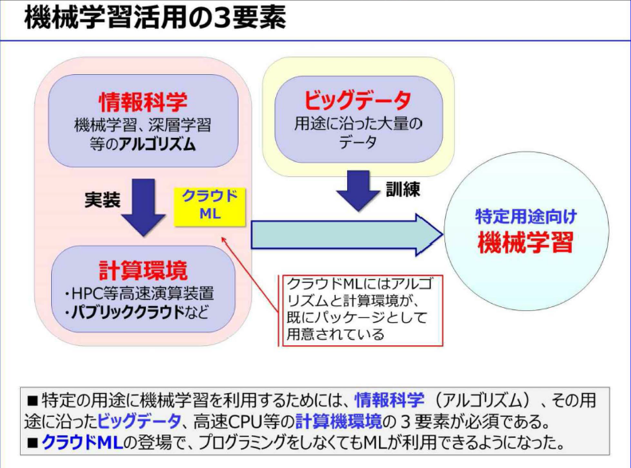
- 機械学習を実際に利用する場合、「情報科学」、「計算環境」、「ビッグデータ」が必須
- 2015年になり、IBM、MSがクラウドML（クラウドAI）をサービスを開始
- アルゴリズムと計算環境がパッケージで提供されたので、データさえあれば誰でも容易に機械学習が利用できるようになった
-
- 適切なアルゴリズムを見つけるには、試行錯誤が必要。このアルゴリズムを利用するにはプログラミングする必要があり、この試行錯誤に非常に時間がかかっていた
- ①対象データの収集
- クラウドMLには、このデータクレンジングを自動的に行えるライブラリも準備されている
- ③アルゴリズムの選定
- 最も出力結果が良かったアルゴリズムを選定することになる。したがってアルゴリズムの種類ができるだけ多いクラウドMLを選ぶべき
- ④実験
- ⑤実験結果の評価
- 正解付の教師データを7対3などに分割し、70%で学習させ残り30%で評価するホールドアウト法などを用いる方法が一般的
- 精度の評価に使う指標として、正解率、真陽性率、偽陽性率、ROC曲線、適合率などがある
- ⑥パラメータ調整
-
- クラウドMLでの実践
- 専門家が不要：従来はAIや機械学習の専門家がいない限り、機械学習をビジネスに利用することは考えられなかった
- 深い知識は不要で、試行錯誤をある程度繰り返して経験を積めば、様々なビジネスシーンに応用することができるようになる。
- 手軽に始められる：クラウドMLはインターネットに接続されたPCさえあれば、だれでも手軽に始められる
- ・費用が最小限で済む：ユーザ登録料は無料、テストだけなら利用料金も無料
- ・ビジネスでの利用が容易になる：実際のビジネス環境で既に多数利用されている
-
-
-
- 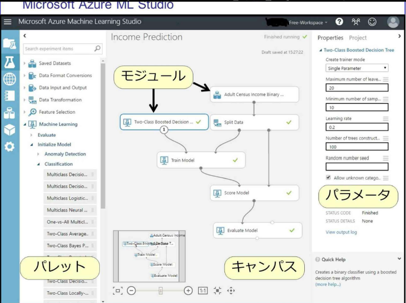
-
- 拡大する機械学習ビジネス
-
- ユーザ接点はすべてデジタル化されており、ユーザに関する大量のデータが取得できる
- 2015年からはWeb接客ツールという従来のECサイトにはなかった接客を行うシステムが登場している
- 集客から再来訪までの一連のマーケティングフローを、システム化しようとするのが、マーケティングオートメーション
- ある程度の自動回答なら今のチャットボットでも可能です
- 高度化：人の能力では発見困難な知見や規則性を見つけ出す
- 高速化：処理に要する時間の劇的な短縮
- ・効率化（自動化）：人がいなくても業務が進むようになる
- 機械学習を応用することにより「判断の進化」が可能
-
- 機械学習ビジネスの課題
- 先行して市場を押さえることができれば、その分野におけるトップランナーになることも可能
-
- 「No Free Lunch定理」どんな問題やどんなデータに対しても最高の制度を出せる万能なアルゴリズムは存在しないという定理
- 機械学習で解決可能かは、事前に詳細剣豪が必要。顧客が保有する現場のデータを用いて、様々なアルゴリズムで試行錯誤しｊながら技術検証をする必要がある。しかも技術検証をした結果、機械学習では顧客課題をかいけつできないという結論になる場合もある
- 日本ではいまだに、ERPのような基幹系ソフトで企業独自の商習慣に対応してカスタマイズされたものが主流となっている。この独自ソフトウェアの開発方法は、仕様を明確なら昔ながらのウォーターフォール型、不明確ならアジャイル型と、ある程度確立している
- 一般的に普及している多種多様なソフトウェアの中にも、様々なアルゴリズムが使われているがユーザーからは隠蔽され意識されていない
- 長い間にアルゴリズムjの利用方法が確立し、ソフトウェアのライブラリに組み込まれて、プログラマーも使い方を熟知している。しかし機械学習の場合、アルゴリズムそのものはある程度確立してきたが、ビジネスでの利用方法は手探りの状況である
- このため、ユーザに「裸のアルゴリズム」そのものを提示し、ビジネス用途に利用可能かを検証してもらうしかない
- 日本の企業、特に大企業は、実績や安全性を重視するために、ファーストユーザーになることを嫌います
- もしそのソフトウェアが同業他社より優位に立てるほど画期的なら先行導入した企業がその分野での先行者利益を独占して享受できる。しかし様子見して実績が出てからの導入だと、他社との競争優位に立てないため機会損失が生じてしまう
- 機械学習ビジネスにおける初期費用問題は、ハイリスクハイリターンを狙うか、ローリスクローリターンにするかの判断とも言える
- 機械学習のようなAI関連サービスは、最新技術が論文などで公開されてからわずか数か月ほどでクラウドMLサービスとして利用できることが多くなっている
- PythonやRｊなどのプログラミング言語を知らなくても機械学習を活用できる時代jになった
- この厳しい競争社会において情報を制する者が常に勝者になる。機械学習などのAI関連の知識は今後必ずビジネス社会で求められていくに違いない
- 社会現象の予測は統計学を応用すればある程度可能で、その技術の延長線上に画像解析や顔認証、さらに音声認識、機械翻訳などがあると考えると理解しやすくなる
- 教師あり機械学習の場合は、教師データとして入力されたデータを統計処理をしてモデル化し、対象データが統計的にみてどの教師データに「統計的ｊに近いか」を計算して判断をしている
- 非エンジニア、文系、ビジネスマンのための人工知能入門：数式が苦手なあなたにおすすめ
- はじめに
- 出来ること、出来ないことを理解することが大切
- 人工知能とはなにか
- あるタスクに特化して人間より秀でた性能を示すことができる
- 強いAI
- 人間が普段こなすようなタスク（話す、移動する、見る等々）を難なく行うことを目的とする
- シンギュラリティ（技術特異点）
- 機械が人間の知能を超える段階
- 人間の知能
- 問題の解き方をモジュール化して、問題に応じてモジュールを再活用し、また複数のモジュールを組み合わせて活用することができる
- トップダウンアプローチ
- 音声認識、自然言語処理、画像認識のモジュール
- ボトムアップアプローチ
- 脳の構造そのものを生理学的に解明し、その構造を工学的に再現しようというアプローチ
- フレーム問題
- 弱いAI
- あらかじめフレームを特定してそのフレーム内における特定条件下で動作する人工知能
- 脳とニューラルネットワーク
- 脳の構成単位であるニューロンを簡易的に模倣して工学的に再現する試み
- ニューロン
- 周囲の他のニューロンからの信号を受け取る樹状突起と、周囲のニューロンに信号を送る軸策による
- ニューロン間の情報伝達
- 「りんご」を学習するとき、果実、赤、丸の3つの特徴を持つニューロンだけが発火する
- 情報とニューロン
- 脳は複数のニューロンにまたがって分散的に情報を保持し、また、新しい情報が入ってきたときは脳全体で学習し、全体で保管しているのではないかと言われている
- 自分の存在は周りとの関係性で定義づけられている
- 機械学習
- 近年なにかと話題に上がる人工知能、いわゆる弱いAI
- 機械学習とはなにか
- コンピュータへの命令としてプログラムを書くときに人の手ですべてをやるには大変な部分を自動で機械に学習してもらおう
- 「認識」と「認知」があることを理解する必要がある
- 認知
- より効率的に多くの概念を学習できることと、それぞれの概念に対する汎用性が求められる
- 認知能力が汎用性を持つほど、認識側でもどのような情報を取り出せば効率的日認知できるかがわかるようになり、認識の能力が向上する
- 最適解と局所解
- 最適解を目標、局所解を現状と置き換えて考える
- 現状ある程度いいところまで学習できるようになった状態を局所解
- 100すべてを学習できた段階を最適解という
- 教師あり学習
- ラベル付け
- データにつけられた情報。データを学習器に入力したときに、その答えが与えられたラベルと一致するように。弱いAI
- 教師なし学習
- ラベルの付いていないデータを用いて、そのデータのラベルや境界を推測していく
- データをなんとなくその特徴から分類し、クラスターというデータの塊をつくる
- 強化学習
- あるエージェント（行動主体）が、自らの置かれた環境の状況に応じて、特定の行動を行ったときにのみ報酬を与える
- コンピュータプログラム上で、この報酬を設計することでプログラムが自動的にその報酬を満たすような振る舞いを体得していく
- 報酬を最大化するには、安定したスロットマシーンだけでなく、確率の低いスロットマシーンにもその潜在的なポテンシャルが潜んでいることを考慮
- 探索とはリスクをとって新たなチャレンジを起こすこと
- 活用は、探索を含めた過去の経験から最もローリスクハイリターンな行動をとること
- ニューラルネットワーク
- 脳の神経回路網を工学的に再現することで、高度な情報処理を実現しようという試み
- 形式ニューロン
- 1943年脳のニューロンの工学的模倣として、形式ニューロンが提案された
- 機械処理とデータセットによる復活
- 線形分離可能な問題しか解けなかったパーセプトロンが、バックプロパゲーショんの提案によって、非線形分離可能な問題を解く力を獲得
- 当時のコンピュータの処理能力では、計算コストが非常に高く、実験による有用性の証明が困難だった。そのためにまた冬の時代を迎えることになる
- パーセプトロンは教師あり学習であり。この学習にはラベル付きの大量のデータが必要になる
- ネット上にはたくさんのデジタルデータが生み出され、あふれるデータとコンピュータ処理能力の発展は新たなブームを呼び起こした
- この火付け役になったのが2012年開催の画像認識コンテスト（ILSVRC）におけるGeoffrey Everest Hinton教授をはじめとする研究グループのニューラルネットワークによるディープラーニング手法を用いた圧倒的な画像認識精度の実現による勝利
- ディープラーニングとは
- まず、1つ目の理由は、ネットワーク構造をよりディープに深くするということ
- もう一つの理由は、ディープラーニングによって、特徴抽出が機会にやらせることができるようになったこと
- 従来は特徴量抽出手法を、場合に応じて使い分けを人の手で意図的に行う必要があった。しかし、ディープラーニングでは、特徴量抽出の部分自体も学習による自動で獲得することができるようになった
- 医療分野の場合、あらかじめ大量の集めやすい事前画像によるディープラーニングの学習によって獲得された小さい概念が、医療系画像における認識においても使いまわすことができた
- 過学習
- 例えば、教科書に書かれている例題をいくら正確に説くことができたとしても、ちょっとひねったテストの問題では歯が立たないといった勉強の仕方では意味がない
- 現状のディープラーニングの手法に関する課題
- 伝言ゲームで最後の人に伝言が使ったときに、初めの伝言と違った意味になっていく現象
- 学習における重みづけ更新の手法を改善する必要がある
- 学習させるデータの課題
- ただ大量であるだけでなく、質が求められる
- 実際には、学習において教師ありのラベル付きデータが必要となるため、データに対してラベル付を人の手で行うことになる。データ量が増えるほど学習精度はあがる一方、ラベル付する量や時間的コストも大きくなる
- ディープラーニングの計算・実装における課題
- 並列高速計算処理ができるGPUが必要となる
- 根本的なディープラーニングの手法の見直し
- 手法自体の発展が目覚ましいわけでなく、コンピュータ計算処理能力がやっと理論に追いついた状況
- 実際の脳のニューロンの構造的には、横に広く浅いことが知られているが、現在のディープラーニングは縦に層を深くするほど精度が改善しているのが現状
- 今後はデータを見て、ディープラーニング自体が自からのネットワーク構造を最適化して決定していくような仕組みも必要となる
- ディープラーニングと画像認識
- 学習データの用意
- 学習の繰り返しと評価
- 進化計算
- 巡回セールスマン問題
- 進化型ニューラルネットワーク
- NEAT
- まとめ
- 現在の弱いAIをさらに高度化できるのではないかと期待される進化計算とそれに関連する遺伝子アルゴリズムや進化型ニューラルネットワーク。そのポテンシャルと実際にNEATにおけるニューラルネットワークの学習プロセスについて学ぶ
- 人工知能（AI）活用時代に必要とされる能力とは？ビジネスで差がつく「データサイエンス力」
- 人工知能（AI）の活用が一般化する時代における重要な能力（総務省「ICTの進化が雇用と働き方に及ぼす影響に関する調査研究」）
- 情報収集能力や課題解決能力、論理的思考などの業務遂行能力
- チャレンジ精神や主体性、行動力、洞察力などの人間的資質
- 企画発想力や創造性
- 語学力や理解力、表現力などの基礎的素養
- コミュニケーション能力やコーチングなどの対人関係能力
- 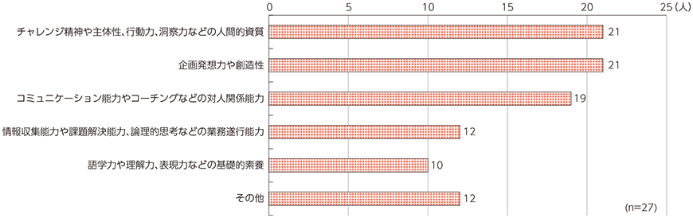
- 考察
- 人工知能（AI）を設計・開発するような時には、
- 企画や創造力を、
- アルゴリズムを設計・開発するような場合には
- 論理的思考能力が、
- 人工知能（AI）を運用する場合には、
- 関係各所との調整力といった能力が
- 日米間での情報リテラシーのギャップや、情報収集能力の格差
- 組織としてデータ分析・活用ができているか？
- 収集された大量のデータが分析されずに“宝の持ち腐れ”状態に陥っている可能性があります。社内の誰もが簡単にアクセス・活用できない
- 社内の誰もが簡単にアクセス・活用できない、リアルタイムで意思決定に活用できないという状況は、経営判断を誤らせたり、鈍らせたりすることにもつながりかねません。
- ビジネスリーダーの２人に１人が課題を認識
- ビジネスにおけるデータサイエンスは、どうあるべきか？
- 従来の“勘”や“経験”のような曖昧な裏づけではなく、確かなデータサイエンスに基づいて、ビジネス上の意思決定を行えるようになることが必要
- ポイントは「顧客の時代」と「スピード経営」
- 顧客がマーケットの主導権を握る「顧客の時代」に対応すること。
- もうひとつは、めまぐるしい市場変化に対して迅速な意思決定を行う「スピード経営」を実現すること。
- グーグルに学ぶディープラーニング（日経ビッグデータ）
- 序章
- ディープラーニングがすべてのビジネスを変える
- ビッグデータでディープラ一二ングが実力発揮
- あらゆる機器をインターネットに接続して稼働データなどを収集するIoTの浸透によって、実社会のデータ化、デジタル化が進む
- トヨタは日米の全乗用車を通信対応に
- 企業の競争力はデータを収集し、価値に変える能力
- 人工知能でイノベーションを生む時代に
- イノベ－ションとは、お客さんに聞いても答えられないような問題を解決したときにのみ生まれる
- デジタル化された実世界の可視化、最適化が進められるようになっている
- さまざまな業界にビッグデータ×人工知能による変革が生まれる
- 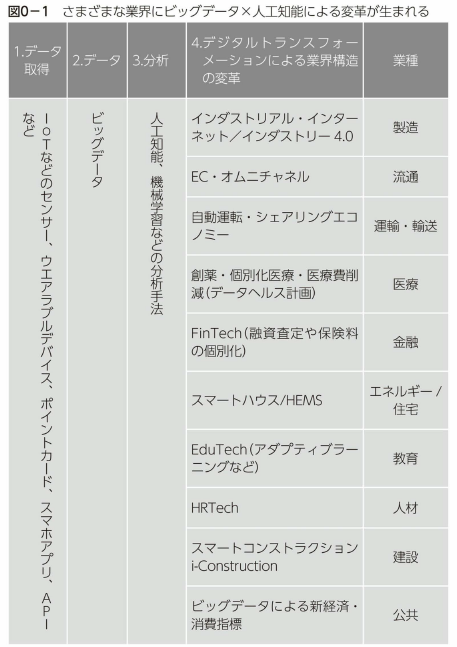
- データ取得
- センサー
- ウェラブルデバイス
- ポイントカード
- スマホアプリ
- API
- デジタルトランスフォーメーションによる業界構造の変革
- 製造
- インダストリアル・インターネット／インタストリ－ 4.0
- 流通
- EC・オム二チャネル
- 運輸・輸送
- 自動運転・シェアリングエコノミ－
- 医療
- 創薬・個別化医療・医療費削減（データヘルス計画）
- 金融
- FinTech （融資査定や保険料の個別化）
- エネルギー／住宅
- スマートハウス／HEMS
- 教育
- EduTech（アダプティブラ一二ングなど）
- 人材
- HRTech
- 建設
- スマートコンストラクション i-Construction
- 公共
- ビ、ッグデータによる新経済・消費指標
- 中小企業にも人工知能の恩恵
- 最近、クラウドサービスを提供する大手IT企業などが、独自データであらかじめ学習をさせた人工知能APl （アプリケ－ション・プログラミング・インタ－フ工－ス）の提供種類を増やしている
- 人工知能を業務改善に活用するなら、誰でも今すぐ利用できる時代
- 1章 超入門
- 人工知能と機械学習とディープラ一二ングはどう違う？
- ディープラ一二ングは機械学習の一部
- 人工知能＝知的な情報処理をするもの、またはその技術
- 大きな概念として知的な処理をする「人工知能j
- 機械学習もディ－プラ一二ングも、人工知能を実現するための手法
- 機械学習のlつの分野が、ディ－プラ一二ング

- 機械学習は人聞がプログラムを作らない
- 機械学習は、プログラムを人聞が作りません。どう判断するかを人間が教えることなく、機械が自分で学ぶことから、『機械学習』と呼ぶ
- 入力の答えとなる出力のセットの例を、たくさん機械に与える
- 機械が答えを出すための手法を、人聞がプログラムとして与えるのではなく、機械が自動的に膨大なデータから学習してモデルを作るのが、機械学習
- 機械の中で、入力に対して正しい答えが導き出されるような「モデル」が作られるだけ
- 膨大な入力と答えのセットから知識を獲得していく

- コンビューターの発達がディープラ一二ングを可能に
- 複数の層の処理を重ねて複雑な判断をできるようにする技術として、深層学習、すなわちディ－プラ一二ングと呼ばれる
- コンビューターの計算力の大幅な向上と、インターネットなどを介して大量なデータを収集することができるようになったことによって、この数年で実用レベルに達してきた
- 「リサーチの洪水Jのごとき人工知能の広がり
- ネットワークインフラや大規模データ処理、機械学習を含むコアテクノ口ジーを外部に提供するためのプロジェクト
- 「モバイルファーストjから「AIファースト」ヘ
- 機械学習で可能となる価値をさまざまなかたちで具現化していく
- グーグルでは、ライフラリをオープンソース化するなど、GCPを通じて、AIファーストの成果を外部に提供するプロジェクトを進めている
- 安価で誰もが画像認識や音声認識、翻訳などの人工知能を利用できるように
- 2章 ディープラーニングの仕組み
- 機械学習「以外jの人工知能とは
- その代表的な方式が、世の中の出来事を論理式で書き出すというもの
- 人聞が『AならばB』という関係をコンビュータ－に教えるので、機械学習ではない
- ゴールを定めておいて、ゴールを達成するには「その前に何をする必要があるか？J
- 人工知能はすべての知的なことを解釈しようと考える
- 分野を限って人工知能の力を最大限に発揮しようと考えたのが工キスパートシステム
- 機械学習以外の人工知能では、コンビューターが考えるための条件式を必ず人間が教えなければならない
- ルールを決めることから、「ルールベースの人工知能Jという
- 機械学習の基本
- 学習するための材料と、学習するための考え方を与える必要がある
- 入力と出力のセットを大量に用意し、コンビューターに学習させていくことを機械学習と呼ぶ

- モデルは、入力から出力を得るための計算のプロセスを表現したもの
- 大量に与えられた信号を機械が計算することで、入力と出力の聞を関係づけるモデルが出来上がる
- 機械学習といってもいろいろな手法がある
- どのようなモデルで機械学習をするかは、人間が設定しなければいけない
- 機械学習で扱われるモデルには、多くの種類がある。
- 「決定木」「帰納推論」 「二ユ－ラルネットワーク」 「デ
イ－プラ一二ング」などが代表的なもの - ここでようやく「ディープラーニングJが出てきました。
- 機械学習のlつの手法が、ディープラーニング
- ニューラルネットワークは脳の神経構造
- 脳の神経の構造を論理的にまねすることで、知的な処理をコンビューターにさせようというもの
- シナプスは、隣接するシナプスからの信号の入力が一定の値を超えると、次のシナプスに対して信号を送り出す一方通行の神経伝達
- 人工的に作ったニューロンがニューラルネットワークの「ノード」と呼ばれる


- ディ－プラ一二ングが、ルールベースの人工知能や他の機械学習と異なるのは、とても単純であること
- 分類の仕方はコンビューターが自分で学んでいく
- 一般的なプログラム言語では、グラフの中の境界線を人聞が設定することで関係を判断する

- ネット上の「遊び場jで、ニューラルネットを理解する
- Playgroundでニューラルネットワークを体感。単純な分類ならば、1層でもOK
- らせんが入り組んだようなパターンの場合、多層化と二ユーロン数の増加によって対応で、きることが体験できます
- ニューラルネットとディ－プラ一二ングを理解する際のポイント
- ニューラルネットでは、お手本データをたくさん読み込むことで、間違いが少なくなるように二ユーロン聞の関係を示す値を調整しながら学習する
- データが複雑になるほど、多くの層の二ユ－ラルネットが必要になる
- 最大のポイントは人聞がプログラムして動くのではなく、コンビューターが自ら特徴を見つけだす
- ディ－プラ一二ングが注目されていることのlつの理由は、人聞を超える可能性にある
- 教師あり学習と強化学習
- サッカーの試合に勝つために、繰り返し繰り返しゲームのスタイルでパスやシユ－トをしながら勝ちパターンを学んでいくといった学習の仕方は、強化学習に近い
- たくさんのデータを入力して、データ自体の構造を発見するといった場合に用いられるクラスタリング分析などで用いられる手法
- 「アルファ碁Jは強化学習をフル活用
- アルファ碁は、架空の対局を自分で繰り返し、勝利という目的に向かつて調整を続けた
- 3章 グーグルのディープラーニング活用事例
- ■未来へ向けて、広がるディープラーニングの活用
- 話しかけて使う家庭のAIコンシェルジュ
- Google Home
- 人間相手のように話が通じる！？
- Amazon Echo
- ■自動運転を支えるディープラ一二ング
- ディープラ一二ングでデータセンターを劇的に省エネ化
- ■人閣の目を超える、ものを見分ける画像認識
- 写真を自動で分類する「Googleフォトj
- 「Googleフォトjでは写真をあらかじめ分類しなくても、例えば「ChristmasJと検索すれば関連する画像を一覧にできます
- お絵描きを人工知能が評価する「Quick Draw」
- Quick, Draw！は人工知能が出すお題（Umbrella（傘））に人が手書きでイラストを箔いて、人工知能に正しく当ててもらうゲームです

- コンピュータも夢を見られるのか？「ディープドリーム」の実験
- 優れたアートや音楽を生み出す「マジェンタj
- 動画像の認識も！「読唇術で人間の専門家に勝つ」
- ■文章を理解するテキスト分析
- 自動で返信メールの候補文を作る「Inbox」
- 迷惑メールフィルタの精度も格段に向上
- 企業の情報検索をスムーズにする「グーグルスプリングボードJ
- 情報を探すための時聞を短縮できる検索インタ－フエースを提供するほか、実用的な情報やお薦めの情報をプッシユ型で提供し、企業で働く人たちの時間を有効に活用できるように支援する
- ■話しかけるだけでコンビューターと意思疎通をする「音声認識」
- 会話しながら人聞をサポートする「GoogleアシスタントJ
- 合成音声もピアノの曲も作成できる「WaveNet」
- ■言語の壁を越える可能性が見えてきた「機械翻訳」
- ニューラルネットでGoogle翻訳が進化
- グーグルでは20 l 6年、Google翻訊にディ－プラ一二ンク、の手法を使ったニューラルネットワークを適用し、翻訳の品質をぐんと高めることに成功
- グーグルニューラル機械翻訊： GNMT）では、そうした区切りはありません。文章の全体を見て、どう訳すか決めていく
- Google翻訳の精度向上前後の翻訳結果
- ■ディープラ一二ングの成果を手軽に使える「機械学習API 」
- lつが機械学習の訓練済みモデルを、APl として提供するかたち
- もうlつが、機械学習ライブラリの「テンソルフ口－ (TeosorFlow）の提供
- クークルが提供する4種類の機械学習AP

- Natural Language APIのテモ画面で例文を入れて、解ができるか確認できます
- • Google Cloud Vision API
- • Google Cloud Speech API
- • Google Natural Language API
- • Google Cloud Translate API
- カスタマイズしたディープラ一二ングを活用できる「テンソルフロー」
- テンソルフローを利用することの最大のメリットは、パイソン（Python）という言語で簡単なコードを書くだけで、ディ－プラ一二ングを利用できること
- APIの利用が「既製服Jだとすれば、テンソルフローの利用は「イージ－オーダーjぐらいのイメージ
- ディープラ一二ングが向く領域、向かない領域
- これからは機械学習やディ－プラ一二ンク、が必ずさまざまな領域で、広がってきます。工ンジ二アだけが知識を持っていればいいのではなく、ビジネスサイドの人もある程度は正確に把握していないといけない
- 得意なところは、大量にデータがあるような非常に複雑な問題
- 複雑な問題になればなるほど、ディ－プラ一二ングは力を発揮
- ディ－プラ一二ングは「企業のサービスの作り方を根底から変える可能性がある
- 機械学習やディ－プラ一二ングをビジネスのどこに適用したらいいか、その発想ができることが重要
- プログラムを書いたり、計算機を買ったりするところまで自前で行う必要はない
- 4章 企業事例編 ディープラ一二ングで業務効率化、園内で続々始まる
- 安藤ハザマ、トンネル工事の岩盤の硬さを判定
- トンネル切羽AI自動評価システムの概念図
- 掘削工事の自動的な最適化まで視野に
- クルマの写真から型式まで特定、オークネットIBS
- 工アロセンス、ドローン空撮データヘ活用
- 少ない教師データで自動車の台数検出システムを構築
- 測量の効率を高めるマーカーを開発
- Peach、音声認識APlで運航案内を24時間化
- 人と人工知能の役割分担
- 運航情報の案内のような人工知能のシステムでできることは、システムに任せればいいでしょう。一方で、複雑な対応は人手でする必要があります
- PeachのCEO （最高経営責任者）である井上慎ーさんは常に、「何かおもろいことをやれ」
- 三井住友FG、カード不正検知精度が劇的に向上
- ディープラーニングでクレジットカードの不正検知精度を向上
- コールセンターへは全席に導入
- lつは安心・安全なサービス提供、2つ目は、顧客サービスの向上や行員の生産性の向上、3つ目はチヤツトボット（自動会話プログラム）のような新たな顧客体験の実現
- 外部の膨大な情報を人工知能で自然言語処理して、役立つセキュリティー対策情報を自動で、導きだすことができる
- まずは行員向けの照会回答業務から利用を開始して精度の向上を進めており、顧客向けサービスへの利用の可能性を探っていきます。
- データから答えは出てこない
- 人工知能活用ステップのフレームワーク化を進め、各部署に共有し、人工知能活用をさらに加速しようとしている
- 人工知能などで業務改善や顧客体験を向上させるために必要なデータを使える状態に整備している
- 先行する画像データの活用
- 音声データはコールセンター中心
- Watsonは自然言語処理と機械学習の技術を使用して、マニュアル、FA Q、判例、診断記録テキストのような大量の非構造化データから洞察を得ることを得意とする
- センサーでは、機器の異常検知や稼働状況の可視化などが主な用途
- まずはコスト削減から入るのが現実的
- l .コスト削減2. 付加価値を高めて新たなビジネス機会を創出3. クリ工イティフ性の向上
- クリ工イティブ性の向上はディ－プラ一二ングならではの期待
- 人の労働には「品質！こぶれJがあり「長時間は働けないJ点、も理解すべき
- 最低限、こうしてシステム開発費用と人件費だけでなく、作業品質と稼働時間などの総合的な要素を含めて投資対効果を考えることも必要になる
- 大切なのは、ディ－プラ一二ングなど機械学習によるシステム開発は、従来のシステム開発とは異なるという認識を持つこと
- 5章 活用フレームワーク編 データ×目的で、整理し、活用の展開図を描こう
- お客さまのデータ活用にかかわる悩みを解決する
- まず小規模なPoC（ブルーフ・オフ・コンセプト：概念実証）を実施し
- ■データ×目的による整理法
- ディ－プラ一二ング活用の目的は、「１ コスト削減」「2. 付加価値を高めて新たなビジネス機会を創出」「3. クリ工イティブ性の向上jです。一方で使われるデータは「l.画像」 「2. テキスト」 「3. 音声」「4.センサ－」となる
- 目的×データからディープラ一二ンクの活用方法を整理する
- 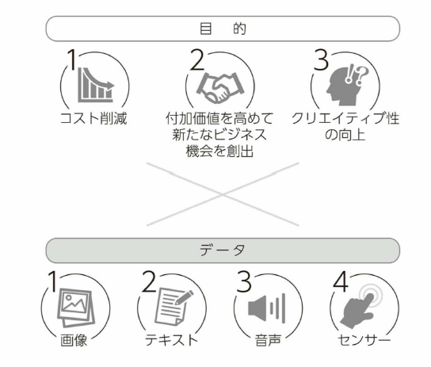
- 先行する画像データの活用
- 音声データはコールセンター中心
- Watsonは事前言語処理と機械学習の技術を使用して、マニュアル、FAQ、判例、診断記録テキストのような大量の非構造化データから洞察を得ることを得意としている
- センサーでは、機器の異常検知や稼働状況の可視化などが主な用途
- まずはコスト削減から入るのが現実的
- 1.コスト削減
- 2.付加価値を高めて新たなビジネス機会を創出
- 3.クリエイティブ性の向上
- ディープラーニングならではの期待
- 人の労働には、「品質にぶれ」があり「長時間は働けない」点も理解すべきだ
- 最低限、システム開発費用と人件費だけでなく、作業品質と稼働時間などの総合的な要素も含めて投資対効果を考えることも必要
- 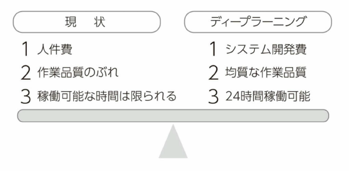
- 大切なのは、ディープラーニングなど機械学習によるシステム開発は、従来のシステム開発とは異なるという認識を持つこと
- ■成功に必要な常識と人材の転換
- 活用の展開図を描けるか
- 業務効率化から始まり、新たな顧客体験の創造、他事業への展開を構想できるのが好例
- （1） ビジネス現場で適用可能かどうか、 (2 ）それに関連したデータを保有しているか、(3）データがディ－プラ一二ング向きかどうかの判断
- 必要な人材像は？

- l .ビジネスの旗振り役2 ディ－プラ一二ングの技術者、データサイ工ンテイスト3. モデルを組み込んだシステムを作る工ンジ二ア4. ビジネスと工ンジ二ア、データサイ工ンテイストの橋渡し役
- 4の橋渡し役が既存の組織にはない、一方で重要な役割を果たす人です。「工ンジ二アと人工知能の技術を理解しながらビジネスとつないでいく人
- どうビジネスに生かすかを描き、人工知能プロジェクトをマネジメントできる人材が求められる段階になってきた
- 機械学習はコモディティー化、次の特別な存在は
- 自社のビジネスに適切に使うことが差異化のポイント
- 人工知能力、特別でなくなった次に特別な価値を持つのは、ディープラーニングに可能な限り早く取り組み、知見を積み、自社に必要になるデータを理解し、1日でも早くそのデータをため始めることが大事
- 6章 将来展望編 ディープラーニングが課題を解決する未来ヘ
- 技術革新の牽引役はディープラ一二ング
- 先進的なアルゴリズムであるディ－プラ一二ングがこれらのファクターを統合して、画像認識を高精度に行えるようにした
- 人間は優秀、アルゴリズムの研究はまだまだ途上
- 人聞は、膨大な知識を使って、文脈（コンテキスト）を把握した上で画像を認識できます。ひと目で状況を判断する「百聞は一見にしかずjといった部分
- コンビューターや自然言語処理、画像処理などそれぞれの分野の研究成果の集大成という側面があります。
- ディープラ一二ングは「データハングリーJ
- 現実世界の課題を解決することがAl研究の目標
- Alや機械学習の研究者の専門知識を統合することで、お客さまの課題を解決できる
- コンピュ－ターがもっと知的になって高度化して、人間がその取り巻く世界を認知、認識するのと同じレベルで認知、認識ができるようになれば、コンビューターによる世界の解釈の仕方が高度化し、人間とコンビューターのインタラクションもより高度化していきます。
- 今は人聞がやっている退屈な反復作業、リスクのある作業、高い精度を必要とする作業は、Alを活用することでコンピュータに任せられる
- おわりに
- 2020年を見据えたグローバル企業のIT戦略 IoT編【2015年11月27日入江宏志】
- 第1章 IoT時代のシステム構築はイベントドリブン型になる
- モビリティ
- SMBC
- Social, Mobile, Bigdata, Cloud
- SMACS
- Social, Mobile, Bigdata, Cloud, Security
- デマンドドリブン型システムの限界
- イベントドリブン型システムの登場
- 完璧な要件定義が不可能であるならば、あいまいな要件を前提に、運用しながらシステムが成長できるように開発しなければならない
- モノづくりが根本から変わっていく
- Industry 4.0
- インターネットやビッグデータ分析、人工知能などを製造業に適用する
- ネットと製造を結びつけるのがIoT
- モノから得られるデータに大きな価値を見出すようになる

- 第2章 IoT活用で問われているのは発想力、ブレインライティングが有効
- IoT+イベントドリブン型の取り組みは始まっている
- 事例１：歩行者に合わせて切り替え時間が変わる信号機
- 事例２：サイズjにあった衣類の提案
- 事例３：犯罪が起こる前に到着する警察
- 事例４：注文前に発送するという特許
- イノベーションを支えるのはアイデア／発想である
- ブレインライティングで他者のアイデアを膨らませる
- 既存IoT事例からイベントドリブン型システムを発想
- 第3章 IoTが導く第3のドリブンは"エモーション（感情）"
- IoTでデータを再集中させるセンサーの課題が未解決

- 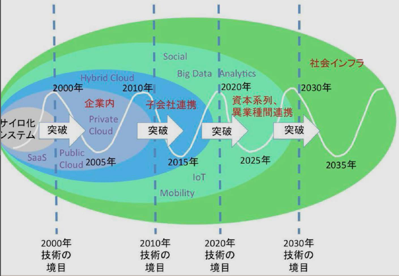
- 第5章 IoTで活性化するロボットと人工知能（AI）
- 第6章 IoTが実現する社会に向けた戦略を確立せよ
- SMBC
- ドローン
- ウェラブル
- センサー
- Mobileコマース
- 交通情報
- フォグコンピューティング
- データの発生地点に近いところにある小さなクラウド（フォグ）で集約
- 蓄積が必要なデータは選別してクラウドに送る
- デマンドドリブンとイベントドリブンが融合
- 従来のITは、デマンドドリブン型
- IoTによって実現されるのは、デマンドドリブンとイベントドリブンの融合
- 人々、M2Mで、より最適なモノやプロセスなどを提案する究極の 1 on 1
- これからのプロセスは、OODA(Observe, Orient, Decide, Act)の流れで柔軟に対処しなけばならない
- OODAでは、常に動向を監視（Observe）しておき、ここぞという時に標的を定め（Orient）し、決定（Decide）し、アクション（Act）を取る
- ビジネスを含めて科学的アプローチが主流
- OODAの考え方により、まずは最小ロットで始め、商品の売れ行きをモニターして、売れ行きに合わせて修正し、商品の改良版を迅速に出そうとしている⇒イベントドリブン型
- 科学的なアプローチ・アルゴリズム
- ヘイズ理論
- フェルミ推定
- ICTの発展が、これからの社会を切り拓く
- IoTによるエモーションドリブン型システムは、将来的には「Brain Computing」へのつながる日も近い
- 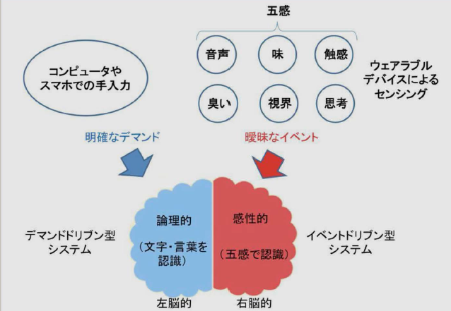
- 平成28年度情報通信白書【総務省】
- 特集「IoT・ビッグデータ・AI ～ネットワークとデータが創造する新たな価値」

- 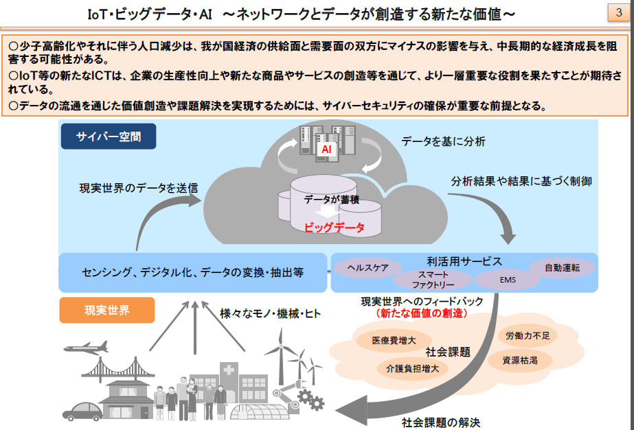
- ICT投資の現状
- ○我が国の大きな課題の一つである少子高齢化による労働力不足に対処するためには、積極的なICT投資を行い生産性向上等を図っていくことが重要。
- ○これまでの日本企業の主なICT投資は、業務効率化及びコスト削減の実現を目的とした「守りのICT投資」。一方米国企業は、「ICTによる製品／サービス開発強化」、「ICTを活用したビジネスモデル変革」などを目的とした「攻めのICT投資」により、ＩＣＴ製品、サービスで先行。
- ○今後の日本企業のＩＣＴ投資は、ハードからソフトやサービスへとシフトする見通しであり、クラウドなど生産性向上に寄与するICTの導入が進む可能性がある。
- ICTがもたらす非貨幣的価値
- ○ICTの価値は企業側と消費者側それぞれにもたらされるが、企業側は最終的にGDPの増加等として既存統計でとらえられるのに対し、消費者側は既存統計でとらえられていない部分（非貨幣的価値）がある。
- ○消費者側にもたらされるICTの非貨幣的価値として、①消費者余剰、②時間の節約、③情報資産（レビュー等）に着目して分析し、以下の結果を得た。
- ①消費者余剰（消費者が支払っても良いと考える価格と、実際に支払われている価格との差）について、音楽・動画視聴サービスを事例に分析すると、
- 利用者は1ヶ月あたり150円～200円程度の余剰を得ている。
- ②時間の節約について、ネットショッピングを事例に分析すると、1回あたり40分～1時間程度の節約になった。
- ③情報資産（レビュー）について、ネットショッピングを事例に分析すると、8割以上の利用者がレビューによって購入する商品を決定した経験がある。
- IoT/ビッグデータ時代に向けた新たな情報通信政策
- IoT/ビッグデータ/AI等の発展による世界的な産業構造の変革にあたって、IoT時代に対応した新たな生産プロセスの開発やサプライチェーン全体の最適化を目指し、官民を挙げた取組が各国で本格化する中、我が国においても、産学官の連携によるIoT推進体制として、平成27年10月に「IoT推進コンソーシアム」が設立された。
- 人工知能（AI）と雇用への影響

- タスクの変化
- AIの業務効率・生産性の向上効果により、機械化可能性が高い職種のタスク量が減少
- AIの新規事業創出効果により、新しく創出される職種のタスク量が増加
- 新しく創出される職種
- 『AIを導入・普及させるために必要な仕事』と『AIを活用した新しい仕事』の２種類の仕事により、タスク量が増加
- 雇用の一部代替
- 仕事のすべて、つまりは雇用が奪われるのではなく、仕事のうちAI活用と比べて同じ生産性でコストが割高となる一部のタスクのみが、AIに取って代わられる
- 雇用の補完
- 少子高齢化の進展に伴い、不足する労働力供給が、 AIやAIと一緒に働く人間、AIによりタスク量が減少した人間によって補完される
- 産業競争力への直結による雇用の維持・拡大
- AIの利活用にいち早く取り組んだ企業が、産業競争力を向上させることにより、雇用が維持・拡大される
- （但し、日本企業にとって、 デジタル化や業務プロセス最適化への対応の遅れが、 AIの導入・利活用の足かせになりやすい）
- 女性・高齢者等の就労環境の改善
- AIを効率的に使った生産性の高い仕事に転換することにより、長時間労働を前提としないフレキシブルな働き方が可能となり、女性や高齢者等の活躍の場が拡がる
- 人工知能（AI）への対応
- 人工知能（AI）の普及に向けた今後の対応・準備
- 日本では、「対応・準備については、特に何も行わない」とする者が多くみられる。他方、米国では、「人工知能（AI）の知識・スキルを習得するなど、人工知能（AI）を使う側に立って、今の仕事・業務を続けようと対応・準備する」とする者が多くみられる。
- 今後、自分自身が取得したい人工知能（AI）活用スキル
- 習得したいスキルを日米で比較した場合、日本は、いずれにおいても、米国よりも各種人工知能（AI）活用スキルの習得意欲が低い。
- 列挙する
- 学習環境や支援制度に対するニーズ
- AI（人工知能）活用スキルを取得するための学習環境や支援制度について、日米双方で、「大学等高等教育機関における教育・研究の充実」が必要とする者が多くみられる。加えて、米国では、「企業における自己啓発に関する支援制度」を必要とする者も多い。
- 総括
- ○ ＩＣＴの積極的な利活用により、経済成長は加速する。その中核となるのは、ＡＩを活用したＩｏＴであり、データ（ビッグデータ）の収集・活用がキーとなる。
- ○これらのＩｏＴ、ビッグデータ、ＡＩなどの新たなＩＣＴは、企業の生産性向上や新たな需要の創出などを通じて、経済成長への大きな貢献が期待できる。
- ○しかし、企業アンケートや消費者アンケートによると、米英等と比較して、日本の企業は新たなＩＣＴ投資の意向が相対的に十分でなく、また、日本の消費者はＩＣＴを活用した新たな商品・サービスの認知度等が相対的に低いことが浮き彫りになった。
- ○さらに、日本の就労者は、今後職場に浸透するであろうＡＩに対して、米国よりも、対応・準備の遅れが目立つ結果となった。
- ○来るＩｏＴ時代に向け、経済成長の中核となるＩｏＴ活用に我が国が乗り遅れることのないよう、企業や就労者がそれぞれ人材育成等の課題にしっかり対応することが重要である。
- 特集部詳細
- 【第1章第１節】 少子高齢化等我が国が抱える課題の解決とＩＣＴ
- 少子高齢化やそれに伴う人口減少は、我が国経済の供給面と需要面の双方にマイナスの影響を与え、我が国の中長期的な経済成長を阻害する可能性がある。
- 様々なデータを収集し（ＩｏＴ）、蓄積し（ビッグデータ）、人工知能（ＡＩ）にて処理・分析することで、現状把握、予測、機器・サービスの制御を行い、新たな価値の創造や課題解決に貢献することが期待される。
- 【第1章第２節】 ＩＣＴによる経済貢献経路
- 【第４章第１節】 ＩＣＴの進化と雇用、働き方
- 我が国就労者は、テレワークやシェアリングエコノミー型ワーク、デジタルファブリケーションなどの新しい働き方で実現が見込まれる多様な働き方に対して、米国就労者に比べて魅力を感じる人が少ない傾向がある。
- 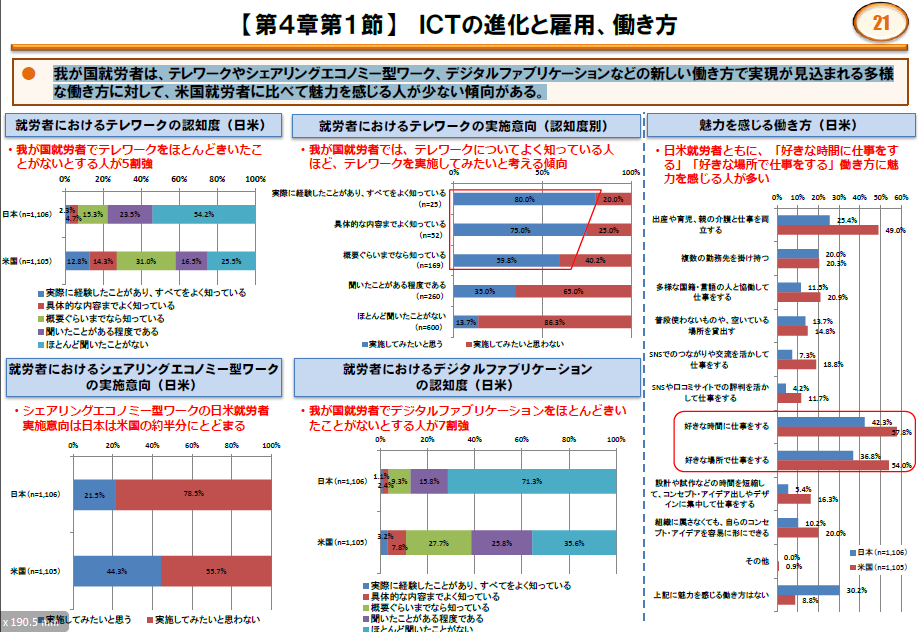
- 【第４章第２節】 人工知能（AI）の現状と未来

- 人工知能のイメージ
- コンピューターに自我（感情）をもたせる技術
- コンピューターが人間のように見たり、聞いたり、話したりする技術
- 人間の脳の仕組みと同じ仕組みを実現する技術
- 人間の脳の認知・判断などの機能を、人間の脳の仕組みとは異なる仕組みで実現する技術
- ゲームやクイズなどの特定の分野において、人間と同等もしくは人間以上の能力を実現する技術
- 画像や自然言語（話し言葉や書き言葉）、様々なデータなどを分析して、その意味合いを抽出する技術
- 学習や推論、判断などにより、新たな知識を得る技術
- 人間を超える知能を実現する技術
- 人工知能（AI）の利活用が望ましい分野
- 生体情報や生活習慣、病歴、遺伝等と連動した、健康状態や病気発症の予兆の高度な診断
- 路線バスやタクシー等の高度な自動運転
- 渋滞情報や患者受入可能な診療科情報等と連動した、緊急車両の最適搬送ルートの高度な設定
- 道路や鉄道などの混雑状況等と連動した、交通手段間での高度な利用者融通や増発対応
- 監視カメラ映像や不審者目撃情報等と連動した、犯罪発生の予兆の高度な分析
- 高度かつリアルタイムの需要予測や製造管理等によるサプライチェーンの最適化
- 未知のサイバー攻撃や内部犯行等による不正アクセスや、不正送金などの金融犯罪の高度な検知
- 高度な意味理解や感情認識等によるコンピュータと人間の対話の高度化
- 利用者の嗜好やメールの履歴、発信元等と連動した、迷惑メールの高度かつ自動的な削除
- 市場の値動き等と連動した、金融資産の高度かつ自動的な運用による利回りの最大化
- 信用供与先の財務状況等と連動した、最適な融資額の算定による貸倒れ損失の回避
- 優良顧客の優遇や感動体験の付与、需給に見合う価格設定等による、顧客の囲い込みや満足度向上
- その他
- 【第４章第３節】人工知能（AI）の進化が雇用等に与える影響①
- 日米就労者の職場への人工知能（AI）の導入は、現時点ではあまり進んでいない。
- 自分の職場への人工知能（AI）の導入や、仕事のパートナーとしての人工知能（AI）に対する抵抗感は、米国就労者に比べて我が国就労者の方が全体的に小さい傾向がある。
- 人工知能（AI）が果たす役割・機能
- 不足している労働力を補完する
- 既存の労働力を省力化する
- 既存の業務効率・生産性を高める
- 既存の業務の提供する価値（品質や顧客満足度など）を高める
- これまでに存在しなかった新しい価値をもった業務を創出する
- 既存の業務に取組む意欲や満足度を高める
- 新しい業務に取組む意欲や満足度を高める
- その他
- 【第４章第３節】 人工知能（AI）の進化が雇用等に与える影響②
- 人工知能（AI）の導入により、「AIを導入・普及させるために必要な仕事」と「AIを活用した新しい仕事」の2種類の仕事によりタスク量の増加が見込まれる。
- 我が国有識者は、人工知能（AI）導入・普及により、労働力供給の減少を補完できると考えている人が多い。
- 【第４章第４節】 必要とされるスキルの変化と求められる教育・人材育成のあり方
- 人工知能（AI）普及に向けた今後と対応・準備について、我が国就労者は特に何も行わないが過半数を超える。
- 人工知能（AI）普及において政府に期待される役割として、日米ともに就労者については「政策は中立であるべき」という回答が多数派を占めるが、国内の有識者については「実用化および導入を促進する政策をとるべき」との回答が多数派を占める。
- 人間の仕事を奪う｢AI｣の過去･現在･未来 | 蘊蓄の箪笥 100章 | 経済ニュースの新基準【2017年04月15日東洋経済オンライン】
- 人工知能の全貌を蘊蓄100章で読み解く
- 参考文献・HP/『人工知能は人間を超えるか』（KADOKAWA）、『最新 人工知能がよ～くわかる本』（秀和システム）、『トコトンやさしい人工知能の本（』日刊工業新聞社）、〈NHK〉、〈MUFG〉他関連サイト
- AIの過去の歩み
- 01. AI＝人工知能とは、コンピュータを用いて人間の脳が持つ知能を実現させようとする技術
- 02. 「人工知能」の定義ははっきりとは定まっていない
- 03. 「人工知能」の概念を初めて提唱したのはアラン・チューリング。人工知能の父とも呼ばれる
- 04. AIは「Artificial Intelligence」の略
- 05. 「人工知能」という言葉が初めて使われたのは1956年夏、米国のダートマス大学で開催されたワークショップ
- 06. 名付けたのは計算機科学者ジョン・マッカーシー
- 07. このワークショップにはジョン・マッカーシーはじめ、後に人工知能分野の伝説的存在となるマービン・ミンスキー、アレン・ニューウェル、ハーバート・サイモンらも参加
- 08. ニューウェルとサイモンは世界初の人工知能プログラム「ロジックセオリスト」のデモンストレーションを披露
- 09. これを機に1960年代にかけて第1次AIブームとなる
- 10. 1969年には、当時の人工知能は情報処理能力に限界があるというフレーム問題が指摘され、ブームは収束する
- 11. 第2次AIブームは1980年代。専門家の知識を取り込み解釈する「エキスパートシステム」が台頭
- 12. このブームも、人工知能が知識を増やしても文字列での理解にとどまりシンボルに意味を結び付けられない「シンボルグラウンディング問題」などの壁にあたり収束
- そして、今の第3次AIブームに
- 13. 2000年以降、ビッグデータを用いた「機械学習」に注目が集まり、今の第3次AIブームにつながっている
- 14. 脳内の情報処理の仕組みを模したものがニューラルネットワーク（神経回路）で、これを多層化したものがディープラーニング（深層学習）である
- 15. 現在、コンピュータの高性能化とディープラーニングの進歩によりAIは急速に発達している
- 16. ディープラーニングは従来のソフトウェア技術が苦手だった画像、動画、音声などの処理を得意とするAI技術
- 17. 「人工知能」は「特化型人工知能」と「汎用人工知能」のふたつに分類される
- 18. 特化型人工知能は、汎用性はないが一定の分野に特化して高い能力を示す
- 19. 自動運転、画像認識、チェスの対戦やIBMの「ワトソン」、アップルの「Siri」なども特化型人工知能の一例
- 20. 現在、人工知能研究者の95%以上が特化型人工知能の分野で研究をしているといわれる
- 21. つまり現在実用されている人工知能のほとんどがこの特化型人工知能にあてはまる
- 22. 現在の人工知能の限界を超えて、人間のような知性を実現しようと試みるのが汎用人工知能の研究開発
- 23. 汎用人工知能はAGI（Artificial General Intelligence）とも呼ばれる
- 24. 汎用人工知能は、新しい情報をインプットすれば応用して実行することができる自律的人工知能を意味する
- 25. AIは「強いAI」と「弱いAI」とに分けられることもある
- 26. その場合の分類は「人間のような意識をAIで再現できるか」がひとつの大きな基準となる。人間のように物事を認識して働き、自意識を備えているAIが、強いAI
- 27. 弱いAIは人間の知能の一部を代替するが機械的で人の自意識を含めた全認知能力を要する事柄は行えない
- 28. 「強いAI」「弱いAI」は米国の哲学者ジョン・サールが作った用語
- 29. 「人工知能」に対してchatterbot（会話ボット）といったコンピュータプログラムは「人工無脳」と呼ばれる
- 30. その元祖といわれるのが1966年にジョセフ・ワイゼンバウムが開発した言語処理プログラム「ELIZA」
- 31. ELIZAの名は『マイ・フェア・レディ』のイライザ・ドゥーリトルに由来する
- 学習していくAI
- 32. アップルの音声アシスタント機能Siriに「話をして」と言うとELIZAとの昔話を語り出す
- 33. SiriはSpeech Interpretation and Recognition Interface（発話解析・認識インターフェース）の略
- 34. 2012年、Googleの研究所でコンピュータ自身が猫を認識することを学習したというニュースが話題となった
- 35. 東京大学合格を目指しセンター試験の模試を受けてきた人工知能「東ロボくん」。2016年に東大合格を断念した
- 36. 東ロボくんはセンター試験模試で総合偏差値57.1をマーク。MARCHや複数の国公立大学の合格ラインに達した
- 37. 東ロボくんの弱点は国語や英語の文脈理解や常識的な選択。現状では克服できないとして受験計画は凍結された
- 38. ソフトバンクが開発した「Pepper」は感情認識機能を持った人型ロボット
- 39. Pepperは法人契約で月額5万5000円でレンタルできる
- 40. LINE公式アカウントで人気の女子高生「りんな」は、対話が楽しめるマイクロソフトのAI
- 41. 「おしえて! goo」には、恋愛の悩み相談にAIによる長文回答生成技術で応じる「オシエル」が登場
- 42. マイクロソフトが試験運用した学習型AI「Tay」は人種差別を覚えたとして運用を停止
- 43. ショートショートおよび短編小説の公募文学賞、日経「星新一賞」は「人工知能など人間以外の応募も可能」
- 44. 2016年にはAI 「きまぐれ人工知能プロジェクト作家ですのよ」による作品が「星新一賞」の一次審査を通過した
- 45. チェス世界チャンピオンのガルリ・ガスパロフにIBMのコンピュータ「Deep Blue」が勝利したのは1997年
- 46. 2012年、コンピュータ将棋のプログラム「ボンクラーズ」に永世棋聖の米長邦雄が敗れる
- 47. 以後、プロ棋士とコンピュータの戦い「将棋電王戦」が毎年行われ、6回中プロ棋士側が勝利したのは1回
- 48. 2011年にはIBM開発のAI「ワトソン」が米国の有名クイズ番組で優勝、賞金100万ドルを獲得した
- 49. ワトソンを利用した料理アプリ「シェフワトソン」では膨大なデータを生かしてレシピを提案してくれる
- 50. シェフワトソンは「ブドウのチャツネ」や「キュウリのレモネード」などユニークなレシピを考案する
- 51. AIワトソンはみずほ銀行や三井住友銀行などのコールセンター業務に導入されている
- 株取引に人間の感情は邪魔！？
- 52. 米国では100%人工知能に任せるヘッジファンドが登場。創業者は株取引に人間の感情は邪魔と確信している
- 53. 世界最大級の投資銀行ゴールドマン・サックスでも株取引の自動化が進み600人いたトレーダーは今やふたりに
- 54. 大阪市は2017年秋から試験的にAIを活用した職員の業務支援を、主に戸籍関連事務を対象に開始すると発表
- 55. 自動車の自動運転技術において、トヨタは人工知能に衝突データを学習させ、自ら学習することでぶつからないように運転を改善していく人工知能の開発に成功
- 56. 車の完全自動走行は国家戦略特区プロジェクトとして実験が始まっている
- 57. 医療分野では、画像診断によるがん診断が人工知能によって行われ始めている
- 58. シンガポールでは、人工知能が交通状況を監視し信号の時間をコントロールすることで渋滞を回避している
- 59. シンガポールのある銀行では、職員の不正を監視するために人工知能を利用。顧客とのチャット内容から、不正可能性を導きだし、職員の不正防止につなげている
- 60. お掃除ロボット「ルンバ」に搭載されている人工知能は、もとは地雷探知ロボット用に開発されたもの
- 61. ローソンは精算と袋詰めを自動化する「レジロボ」の導入を検討。大阪の実験店舗で実証実験を開始した
- 62. レジロボはパナソニックが開発。経産省「平成28年度ロボット導入実証事業」に採択されている
- 63. 「AI」は2016年の新語・流行語大賞にノミネートされた
- 64. 人工知能のIQをあえて表すと4000超のレベルになる
- 65. 鉄腕アトム（原作版）は善悪の見分けがつく電子頭脳、60カ国語を話せる人工声帯など7つの能力をもつ
- 映画で描かれる数々のAI
- 66. 『2001年宇宙の旅』のHAL9000は1960年代の映画製作当時の研究者が2001年には実現するとみていたAI
- 67. HALはIBMを1文字ずつ前にずらして命名されたという説があるが作者らによって否定されている
- 68. 『ターミネーター』は人工知能スカイネットが反乱、機械軍により人間が絶滅の危機を迎えた未来が舞台
- 69. 映画『マトリックス』は人工知能が地上を支配し人間を電池として管理、エネルギーを得る世界が描かれている
- 70. 映画『オートマタ』もAIが人間の知性を超えるシンギュラリティ（技術的特異点）を描くSFサスペンス作品
- 71. 2014年の映画『トランセンデンス』はジョニー・デップ扮する科学者の意識がアップロードされた人工知能が人類の脅威となり、混乱に陥る世界を描いたSFサスペンス
- 72. 2013年の映画『her/世界でひとつの彼女』は人工知能OSの声に恋をする男の姿を描いたSFラブストーリー
- 73. 美しいロボット「エヴァ」が登場する『エクス・マキナ』は2016年アカデミー賞視覚効果賞を受賞
- 74. 『イミテーションゲーム/エニグマと天才数学者の秘密』は人工知能の父アラン・チューリングの生涯を描いた映画
- 75. ある機械が知的（人工知能）といえるかどうかを判定する方法として「チューリングテスト」がある
- 76. 2014年ウクライナの13歳の少年という設定のAI「Eugene」が史上初めてチューリングテストをパスした
- 77. 2014年、Googleが4億ドルで買収した人工知能の開発を行うベンチャー企業が「DeepMind」
- 78. 2016年3月には「AlphaGo（アルファ碁）」というAIシステムが囲碁の世界チャンピオンに4勝1敗で勝利
- 79. AlphaGoはDeepMindが開発しているゲーム用汎用AI「DQN」を基盤として囲碁トレーニングを行ったもの
- 80. DQNは機械学習と神経科学の汎用学習アルゴリズム
- 81. DQNに49種類のAtari 2600用ゲームをプレイさせるテストの結果、43のゲームで既存のAIよりも高いスコア、29タイトルでプロゲーマーよりも高いスコアを記録
- 82. DeepMindの創立者デミス・ハサビスはそのプロジェクトを人工汎用知能（AGI）を理解するためのものと説明
- 83. 世界最大のSNSフェイスブックは2013年、ニューヨーク、ロンドンなど3カ所に人工知能研究所を設立
- 84. シンギュラリティ（技術的特異点）とはAIが人間の知能を超え、自身より賢いAIを生み出すサイクルに入って爆発的に進化を遂げ始める瞬間
- 85. AIの世界的権威レイ・カーツワイルは著書でシンギュラリティが2045年頃現実に起こるだろうと主張している
- 86. 米国の数学者でシンギュラリティの概念を広めた作家のバーナー・ビンジはさらに早く2030年頃起こると予想
- 87. 2015年野村総研が「日本の労働人口の49％が人工知能やロボット等で代替可能になる」とのレポートを発表
- 88. 同時に、「人工知能やロボット等による代替可能性が高い100種の職業、可能性が低い100種の職業」を発表
- 89. AIで代替可能とされるのは「特別な知識やスキルを必要としない職業」や「データ分析で体系化可能な職業」
- 人工知能は核兵器よりも潜在的な危険をはらむ？
- 90. AIの代替可能性が低いのは「芸術、哲学など抽象的な概念を整理・創出する知識が要求される職業」「他者との協調やネゴシエーション、サービス志向性が求められる職業」
- 91. オックスフォード大学の論文で提示された「10～20年後になくなる職業トップ25」のトップは電話販売員
- 92. 「なくなる職業」2位には不動産登記の審査・調査、3位には手縫いの仕立て屋がリストアップされた
- 93. 「10～20年後まで残る職業」のトップはレクリエーション療法士。2 位は整備・設置・修理の第一線監督者
- 94. 三菱総研の試算ではAIなどの普及により2030年には国内で雇用される人の数が240万人減るとされる
- 95. 英国のオックスフォード大学人類未来研究所は、人類滅亡リスクの要因のひとつに人工知能の暴走をあげた
- 96. テスラやスペースXの創業者イーロン・マスクも「人工知能は核兵器よりも潜在的な危険をはらむ」とツイート
- 97. ホーキング博士は「人工知能の進化は人類の終焉を意味する」と警告している
- 98. 世界中で発表されるAI分野の論文数は1日4100報、年間では150万報まで急増しているとも概算される
- 99. 2050年までに生命科学系のノーベル賞をAIで受賞するというグランドチャレンジを提案、実行する組織も登場
- 100. 安倍政権が「第4次産業革命」で掲げる目標でAIは2020年までに約30～40兆円の市場を生み出すとされる
-
- デジタル大変革時代、本番へ
- 時代環境が大きく変わる時、それにそぐわないビジネスは淘汰されていく
- デジタル変革とも呼ぶべき第4次産業革命の入り口にいる
- デジタル時代にふさわしい新たなビジネスを生み出して行く必要がある
- 旧来の仕組みの高度化、洗練は否定されるべきではないが
- “デジタルトランスフォーメーション”が重要
- 仕事の進め方や社会のあり方をゼロベースで刷新し、時代に適合するように自らを変える
- それに歩みを進めるかどうか、つまり企業の方向性を決めるのは、言うまでもなく経営者
- 経営者の役割： 時代の潮流を捉え、自社が変化の中で発展できる道を探り、ビジョンをはっきりと示す
- 同時に従来から続く組織構造の破壊や再構築も必要
- 求められるのは、周囲を巻き込みながら改革を進める能力やビジネスとデジタルを結び付けて全体をデザインする能力を持った新しい時代のリーダー
- ITエンジニアがリーダーへと成長するには挑戦する意欲を持つ
- さまざまな経験を積み、多様な人と関わる環境が必要
- 企業が行わなければならないのは、誰もが挑戦できる環境、開かれた場を作ること
- 個々のIT人材は、自らも“デジタルトランスフォーメーション”の流れの中にあることを意識
- その中で活躍できる人材となれるように、自らの能力を高めていくことが重要である
- そのためには情報への感度を高め、自ら挑戦する場を求める姿勢が重要になる。普段の仕事に専念しているだけでは不十分と考えなければならない。
- 企業に向けたメッセージ
- IT企業
- デジタル変革が進む中では、IT企業は“デジタルトランスフォーメーション”に資する技術力や提案力を磨き、ユーザー企業のパートナーとして新たな事業価値を生み出していく役割を担う必要がある。
- そのためにはユーザー企業やベンチャー企業などとの「協働」関係を築くことも欠かせない。
- ユーザー企業（IT部門）
- “デジタルトランスフォーメーション”を推進するのか、それとも現状維持を選択するのか。
- 第4次産業革命が進むにつれて、発展するビジネスと縮小するビジネスが明確になっていく。
- CIOやIT部門は、そのことを認識し、変化を主導する側に立つ必要がある。
- そのために一刻も早く現状把握を行い、ビジョンを明確にし、戦略を遂行しなければならない。
- “デジタルトランスフォーメーション”を実現するには、ビジネスとデジタルのスキルを併せ持った人材が重要となる。
- それがあって初めて、イノベーティブなデジタル技術を持つ企業や、他業種など多様な企業間での連携を進められる
- その視点に立って、人材の育成と獲得をしていく必要がある。
- 従来、社内でIT業務の中核を担ってきたIT部門は今、再び挑戦を迫られている。
- デジタル変革に伴って生じる新たな事業や業務において重要な役割を担うことへの挑戦でもある。
- IT人材個人に向けたメッセージ
- デジタル時代は、個々のIT人材にとって活躍の場を広げられるまたとないチャンスである。
- 所属する企業で新たな試みをすることもできるし、起業のチャンスも開けている。
- クラウドコンピューティングやモバイルの進展で、個人や少数のチームでできることが飛躍的に拡大している
- このことを認識し、目の前の業務だけにとらわれることなく、広く視野を持って進むべき道を探り、学ぼう。勉強会やコミュニティなど、学びの場は周囲にある。自己研鑽によって能力を高めれば高めただけ、社会をリードする人材になっていく。
- 1．デジタルトランスフォーメーション時代のIT人材
- “デジタルトランスフォーメーション”とは何か
- ITの進展やインフラの整備によって、ビジネスや社会のあり方が変わり始めている。
- あらゆるものがインターネットに接続するIoTの拡がりや、ビッグデータ活用、人工知能（AI）の様々な分野への適応が始まっている。
- デジタル化を進めるということは、様々な要素（アナログデータも含む）をデジタル化、数値化して扱うことを意味する。
- 共通に扱えるデータへと変換することによって、処理や分析が可能になり、フィードバックまで含めた一連の流れを作ることが可能になる。
- デジタル化の本質は、以上のようなデータ駆動型へのビジネスや社会の変革にある。
- その変化は、“デジタルトランスフォーメーション”や“デジタル革命”と呼ばれている。

- 既存のビジネスや業務に新技術を取り入れるだけでなく、ビジネスモデルを変え、経済活動のみならず、個人の生活や社会構造にまで影響が及ぶ。
- デジタル化によって起こる変化の一例として、紙の書籍から電子書籍へのデジタル化を図式化したものである。
- すでに始まっている“デジタルトランスフォーメーション”
- 「IoTやビッグデータ、AIなど技術の進展等によって、社会や産業、企業、人のあり方や働き方が大きく変化すると言われている。この変化に対してどのように捉えているか」
- ネットサービス実施企業は
- 、「すでに変化の中にいる」が約40%である。インターネットを活用し、データを扱うビジネスを実施しているという性質上、変化に対して敏感だと言える。
- 事業会社であるユーザー企業では
- 「変化は今後起こるが、至近に迫っていない」という回答の割合が最も高い。
- 「大きな変化が起きるとは思わない」や「わからない」も他の企業区分に比較して高い割合を占めている。
- 一方、IT企業では、
- 「すでに変化の中にいる」、「変化は至近に迫っている」、「変化は今後起こるが、至近に迫っていない」、「この変化が特別なわけではなく、常に変化は起きている」の回答割合がほぼ同率だった。
- 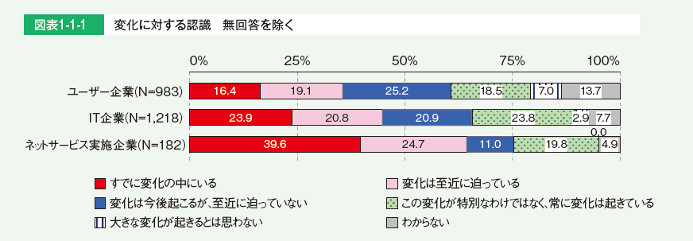
- 外部ITサービス利用状況、現在の事業【変化に対する認識別】
- “デジタルトランスフォーメーション”が進む企業では、経営者による主導の重要性を認識
- デジタルトランスフォーメーションには、大きな変化が伴うため、業務の部分的なデジタル対応やIT導入による効率化のみでは対応できない。
- “変化”には誰が主導して対応していくべきか尋ねた。
- 「すでに変化の中にいる」企業では、他の認識の企業に比べて「経営者」が主導していくべきだという回答の割合が高い。

- “デジタルトランスフォーメーション”の鍵を握るリーダー的人材
- 全体方針を示す経営者に加え、具体的な推進を行う人材も存在している。
- デジタル化の具体的な施策の決定や新事業の立ち上げなどを主導する、リーダー的な役割を担う人材が大きな役割を果たしている。
- この人材は、例えばCIOや、デジタル推進部門、デジタル技術を用いた新事業部門、IT系部門などに存在し、それぞれのデジタル化を推進している。
- 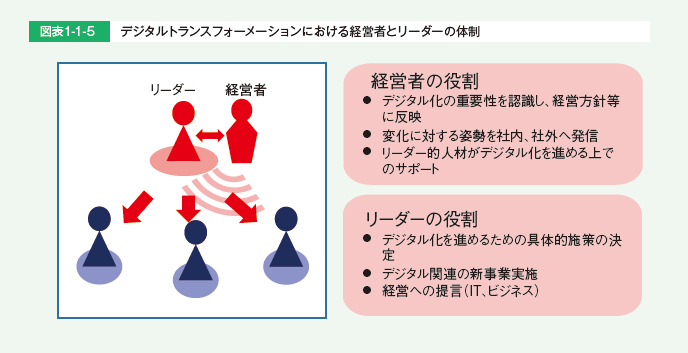
- 方針やビジョンの明確化」、「専門組織・部署の設置」、「Fail fastなどの風土改革」を重要視
- デジタル化を「主導すべき」人が実施すべき施策
- 「新たな市場創出のための方針やビジョンの明確化」
- 「新たな市場創出のための専門組織・部署の設置」
- 「新たなチャレンジを評価するFail fastなどの風土改革」

- 経営者とリーダーが周囲を巻き込み、改革を進める
- リーダー的存在が企業内の複数個所に存在する場合もあるが、経営者と現場に近いリーダーとがともに改革を進めていく大きな流れは変わらない。

- デジタル化の推進をリードする人材に必要な能力と環境
- ・デジタル化を推進するリーダーに求められるのは、“他人を巻き込む力”、“ビジネスとデジタルの知見”
- ・デジタル化を推進するリーダーが育ってきた背景は、“多様な経験と新しいものへの挑戦”、“ネットワーク、外部とのつながり”
- ・デジタル化を推進するリーダーの育成に重要となる環境の整備

- デジタル化に携わる人材
- 必要な能力
- もともと製品の社内開発・運用を行ってきた企業の場合、
- 社内に既存の技術力はあり、加えて具体的な技術（データ解析やAI、クラウド等）が求められている。
- また、具体的な要素技術だけでなく、システムの構造設計を行い開発する能力（システムアーキテクト）の重要についても挙げられていた。
- 一方、これまでITが深くかかわっていなかった事業がデジタル化した場合、
- 今までIT部門が行っていた外部企業への開発委託を事業部門が直接行うことになり、ITを事業に適用する能力や、機能設計や要件定義を行う能力が求められる。
- 人材の獲得方法と育成
- 事業のデジタル化に必要なIT能力を、既存の人材でまかなうのは難しいとの意見があった。
- デジタル化した事業を行っている企業では、ネット系の企業等でデジタルビジネスの経験がある者を中途採用し、事業の推進を行っている例が見られる。
- また、新しい技術（データ活用やAI、IoTなど）を持った人材に関しては、中途採用の難しさを挙げる企業が多く、新卒採用した人材を育成して人材確保する傾向が見られ、新卒を採用する際に理数系人材を重視する企業もいくつかあった。
- 育成のスピードアップと高い技術力を持った人材の輩出につなげたい考えである。
- ただし、内部人材育成の難しさを挙げる企業もあり、必要な技術を持った人材を中途採用できる場合は行い、できない場合はアウトソーシングや、外部との連携を行うことで技術を補完する場合もあった。
- 2．日本と米国の情報処理・通信に携わる人材
- 日米、欧州等の情報処理・通信に携わる人材の所属企業
- 日本はIT企業に所属する情報処理・通信に携わる人材の割合が72%と突出して高くなっている。
- 一方、日本以外の国は、IT企業以外の割合が5割を超えており、米国はIT企業以外に所属する情報処理・通信に携わる人材の割合が65.4%と最も高くなっている。

- 日米の情報処理・通信に携わる人材の業種別人材の割合
- 米国では、「IT企業」に次いで「サービス」の割合が30.2%と高くなっている。
- 「金融」については日本の2%に対し米国では8.4%、「公務」については日本の0.5%に対し米国が6%と、日本より幅広い業種に情報処理・通信に携わる人材が所属していることがわかる。
- 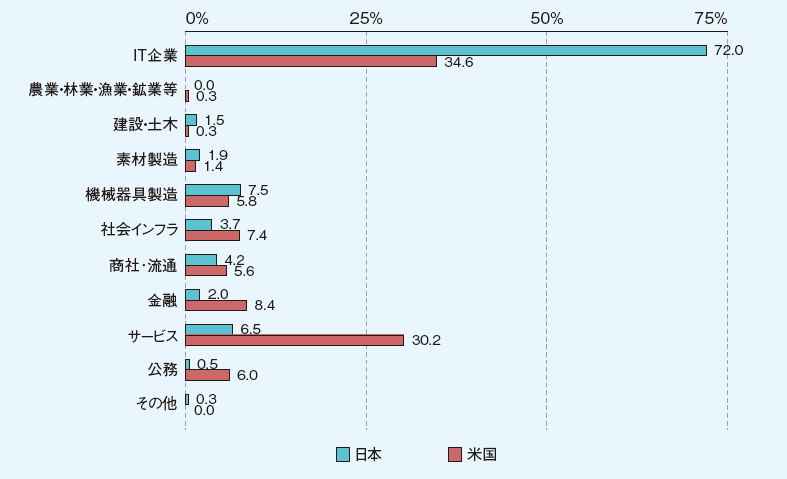
- 米国における情報セキュリティ技術者に必要なスキルや経験
- 「コンピュータ科学または関連科目の準学士号」の割合が68.8%と最も高く、「コンピュータ科学、サイバーセキュリティ、情報セキュリティまたは関連科目の学士号」（60.4%）、「情報システムに関する修士号（MS（Master of Science））」（57.2%）と続き、学歴を重視する傾向が見られる。
- 「資格（例えばCISSP）」が55.4%と、資格への関心も高い。

- 米国の組織のCISOに必要なスキルや経験
- 「リーダーとしての経験」の割合が92.1%と最も高く、「IT部門での業務経験」（72.8%）、「一般的な経営学修士号（または同等の修士号）」（71.3%）と続いている。
- 情報セキュリティ技術者にとって必要なスキルや経験の調査結果とは違い、経験を重視する傾向が見られる。

- 米国の組織におけるサイバーセキュリティ：トレーニングプログラム開発のための大学との連携・協業状況
- 約5割もの組織がサイバーセキュリティトレーニングプログラムの開発のために大学と連携・協業していることがわかる。

- 3．IT人材不足の動き
- IT人材の“量”に対する過不足感【過去10年の変化】
- IT企業では、リーマンショック以来高まり続けていたIT人材の“量”に対する不足感の高まりがやや緩和した。
- 「大幅に不足している」と答えた割合が、2015年度調査の24.2%から、今年度では20.3%と減少している。
- また、「特に過不足はない」は2015年度調査の8.1%から、今年度では11.9%と増加している。
- 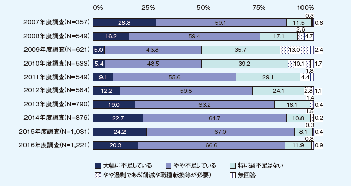
- 人材不足改善の取り組みのうち効果があったもの
- 「社内人材の育成強化」が最も多く、66％に上っている。
- 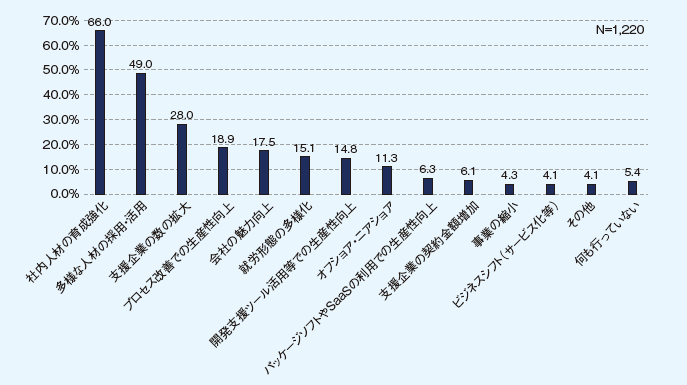
- IT人材の「職種別の人材数」と「人材のレベル」の把握状況【経年】
- 計画的な人材育成には人材把握が必要となるが、今年度調査では、「職種別の人材数、人材のレベル両方を把握している」割合が大きく増加していた。

- IT人材の“量”に対する過不足感【過去9年の変化】
- 2010年ごろに不足感が減少した以降、2014年度調査までは不足感に大きな変化のなかったユーザー企業だが、2015年度調査の結果ではIT人材の“量”について、「大幅に不足している」「やや不足している」と回答した割合が増加した。
- 今年度も引き続き不足感が増す傾向にある。
- 4．IT人材動向（IT人材の意識の比較【2016年度と2011年度】）
- 仕事や職場の環境に対する満足度（30代-40代）【2016年度と2011年度】
- 2016年度、2011年度共に「仕事内容（希望に合った仕事かどうか）」、「休暇の取りやすさ」、「プライベートとの両立」「職場の雰囲気」に対する満足度は高い。
- 全項目に対して微増微少はあるが、変化は読み取れない。

- 仕事内容に対する考え方（30代-40代）【2016年度と2011年度】
- 「この仕事をしていることに誇りを持っている」では、「よく当てはまる、どちらかと言えば当てはまる」では2011年度の51.3％から2016年度の66.3％と増加した。
- 一方、「新しい部署や企画を立ち上げる仕事をしたい」では「よく当てはまる、どちらかと言えは当てはまる」の合計が、2011年度の67.7％から2016年度の35.4％、「関係者を説得し、社内改革する仕事をしたい」も同様に2011年度53％から2016年度の40.2％と割合が低下している。
- キャリアやスキルアップに対する考え方（30代-40代）2016年度と2011年度】
- 2016年度、2011年度共に「技術の変化に合わせて自分もスキルアップしなければならないと思う」について「よく当てはまる、どちらかと言えは当てはまる」と回答した割合は8割台半ばであり、「新しい技術やスキルを学ぶのは楽しい」の割合も共に7割強である。
- 一方、「将来のキャリアパスが明確である」で「よく当てはまる、どちらかと言えは当てはまる」と回答した割合は2011年度と2016年度共に約3割であり傾向に変化はない。

- 仕事と職場環境に対する満足度（30代-40代）【2016年度と2011年度】
- 全項目において「満足している」の割合が増加している。

- 仕事内容に対する考え方（30代-40代）【2016年度と2011年度】
- 「この仕事をしていることに誇りを持っている」では「当てはまる、どちらかと言えは当てはまる」を合計した割合が2011年度の57.7％から2016年度の67.3％と増加している。
- 一方、「新しい部署や企画を立ち上げる仕事をしたい」では「当てはまる、どちらかと言えは当てはまる」の合計は、2011年度の76.5％から2016年度の52.7％へと23.8ポイント低下した。
- また、「新しい顧客を開拓・獲得する仕事をしたい」の割合も2011年度の59.8％から2016年度の47％へと低下している。

- キャリアやスキルアップに対する考え方（30代-40代）2016年度と2011年度】
- 「将来のキャリアパスが明確である」では「当てはまる、どちらかと言えは当てはまる」を合計した割合が2011年度の31.5％から2016年度の45.9と増加し、「将来のキャリア目標を持っている」、「自分のキャリア目標は実現可能である」のいずれにおいても割合が増加している。
- しかしその一方で、「自分の将来のキャリアに対して強い不安を感じている」に対する「よく当てはまる」の割合はやや増加しており、キャリアは明確なったものの、不安感は弱まってはいないように見受けられる。

- 第四次産業革命を視野に入れた知財システムの在り方について【2017年4月19日METI】
- （検討会報告書概要）
- １．（１）第四次産業革命と知財システムを取り巻く環境
- これまで
- 「モノ」に関する技術が競争力の源泉
- 多数存在する同業他社間での競争を通じて自前技術を確立し国際競争力を確保
- 「知財」として独占することと市場を広げる「標準」化を組み合わせたオープン＆クローズ戦略を推進
- 現在
- IoT、AI及びビックデータに代表される技術革新が進展
- 「データ」及びその「分析技術」、それらを活かした「ビジネスモデル」が新たな競争力の源泉に
- 様々なつながりにより新たな付加価値が創出される産業社会“Connected Industries” が到来
- オープン・イノベーションを通じて利益の獲得やビジネスを拡大することが求められている
- これから
- オープン＆クローズ戦略の対象の拡大・深化が必要
- 「知財」及び「標準」に「データ」を加えた三次元的な複合戦略が必要
- 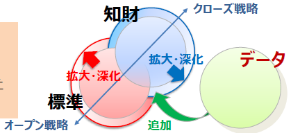
- １．（２）第四次産業革命と知財システムを取り巻く環境
- 知財、データ、標準の三次元的な複合戦略及び検討対象項目

- ２．データの利活用
- データ利活用に関しては、一定の法的基盤が整備されつつある
- 一方で、データを不正な利用から保護する仕組みが十分でない
- データの利活用やアクセスに関する権限は法的な位置付けが明確でなく契約に委ねられている
- 不正競争防止法等におけるデータの保護
- 不正競争防止法の改正を視野に入れ検討する
- （検討例）
- データの不正取得の禁止
- データに施される暗号化技術等の保護強化
- 営業秘密としているデータ分析方法等に係る民事訴訟の負担軽減（政令）
- （産業構造審議会「営業秘密の保護・活用に関する小委員会」において検討中、今春を目途に方向性のとりまとめ。）
- 情報のデジタル化を踏まえ、営業秘密管理指針・秘密情報の保護ハンドブックの記載を充実させる
- 利用権限に関する契約
- データの利用権限に関するガイドライン等の策定を行うための検討を行う
- （検討内容）
- 企業間におけるデータの利活用や契約の実態に即した、保護の在り方や契約等のルールについて
- ３．（１）産業財産権システム～「データ」・「サービス」等への対応～
- 今後のイノベーションにより、新たなデータ構造の創出が想定される
- IoTが普及する中、サービスとモノが結びついたビジネス関連発明の特許出願が増加している
- これら新たな競争力の源泉は、どのような要件を備えれば権利化できるのか、分かりづらい
- AI、３Dプリンティング、ネットワーク化等に関する技術の進展により、新たな課題も生じている
- データ構造の取扱いの明確化
- 特許の対象となるデータ構造の事例を公表（平成29年3月）
- 今後とも、予見性を高める取組を継続
- IoTを活用したビジネスモデルを支える知財
- 特許を着実に取得し活用するための環境を整備（平成29年度中）
- （具体例）
- ソフトウェア関連発明の審査基準の点検
- ビジネス関連特許の活用方法の整理
- 新設した特許分類の活用
- 分野横断的な審査体制の整備
- 新技術への対応
- 国境をまたいだ侵害行為に対する権利保護（裁判例の蓄積等を注視しつつ、引き続き検討）
- 将来的なAIによる発明等の産業財産権上の取扱い（現時点では、現行法で保護。今後の動向を注視）
- 3Dプリンティング用データの産業財産権上の取扱い（現時点では、現行法で保護。今後の動向を注視）
- ３．（２）産業財産権システム～特許紛争の解決～
- IoTの普及に伴い、企業間の連携が増加する中、知財の管理コストが増大するおそれ
- 米国では、パテント・トロール※１による濫用的な権利行使が社会問題化
- つなげる社会インフラの一部を構成する規格については、その実施に必要な特許をめぐる紛争が多発・長期化すれば、経済・産業に悪影響が及ぶおそれ
- 特に、中小・ベンチャー企業は、交渉や訴訟への対応に当たり困難に直面する可能性
- 標準必須特許に係る裁定制度の導入（標準必須特許）
- 標準必須特許をめぐる紛争を対象とし、行政が適正なライセンス料を決定するADR※２制度（標準必須特許裁定）の導入を検討
- 平成30年の特許法改正を目指し、検討を進める
- 紛争の早期解決に資するあっせん制度の検討（多様な紛争解決）
- ライセンス契約や特許権侵害紛争を対象とし、中小企業等が使いやすいADR制度（あっせん）について、検討
- 民間ADR（日本知的財産仲裁センター等）との関係を整理した上で、制度設計を検討
- 用語
- ※１パテント・トロール：ライセンス料や高額な和解金を得ることを目的とした権利行使をビジネスとする者
- ※２ADR（Alternative Dispute Resolution）：調停、あっせん等の、裁判以外の方法による紛争解決手段
- ４．国際標準化を推進するための体制・人材育成
- ハード分野のみならず、ソフト分野を含めた国際標準化を迅速に行うことの重要性が増加
- 標準化活動の中心は、デジュール※１からフォーラム／コンソーシアム※２へ変化
- 研究開発やビジネスの検討段階から、標準化活動を行わないと他国にスピードで追いつかない
- 領域融合的な分野では、従来の特定の工業会を主体とした標準化の取組が困難化
- 標準化体制の整備不足や国際標準化を支える人材の質的・量的に不足
- 各種ツールを活用した業種横断テーマの推進（標準化推進体制）
- 官民の標準化体制を強化
- （具体例）
- •「新市場創造型標準化制度」※３の活用
- •国立研究開発法人の更なる活用による業種横断プロジェクト組成の検討
- （ドイツ等と連携したスマートマニュファクチャリング分野の国際標準化等）
- 標準化人材育成の取組の強化（標準化人材育成）
- 「標準化人材を育成する３つのアクションプラン」※４等に基づき標準化人材を育成
- （具体例）
- 経営層の標準化に対する理解の深化
- 最高標準化責任者（CSO：Chief Standardization Officer）の設置
- 政府によるルール形成戦略に関する情報の収集体制を強化等
- 標準関連業務に関与する知財に関する専門家としての弁理士の役割を明確化
- 用語
- ※１デジュール標準：公的な機関で明文化され公開された手続により作成された規格
- ※２コンソーシアム／フォーラム標準：特定分野に関心のある企業等が集まり、合意により作成された規格
- ※３国内における業界団体を通じたコンセンサスを求めない規格化の仕組み
- ※４産官学から構成される「標準化官民戦略会議」の下の標準化人材WGにおいて、平成29年１月に本プランを策定
- ５．個別産業分野及び中小・ベンチャー企業等の視点からの検討
- 個別産業分野で行うことが適当な取組例
- ものづくり等（ロボット分野）
- エッジコンピューティング※等のビジネスモデルを意識した知財ポートフォリオの構築
- 工場のネットワーク化のためのデータフォーマットの国際標準化の推進など
- モビリティ（自動車分野）
- 車両データ等の第三者による不正利用に対する保護のルール作り
- 商習慣の異なるIT業界による特許の動向を踏まえた、知財戦略の構築など
- 健康・医療・介護（医療・介護及びバイオ分野）
- 医療技術に関する事業者間のデータの保護のルール作り
- 臨床データ等の取得方法やその保存のためのデータフォーマットの国際標準化の推進など
- 中小企業等の支援の観点から行うことが適当な取組例
- 「地域知財活性化行動計画」（平成28年９月策定）に基づく、国内外での特許取得や海外展開の支援
- 「新市場創造型標準化制度」を利用した迅速な標準化による市場拡大の支援
- 大企業と中小・ベンチャー企業との連携の促進
- 用語
- ※エッジコンピューティング：デバイス側に高度な情報処理機能を持たせ一定の処理を分散的に行わせることで、通信環境に左右されることなく大量のデータを処理する情報処理形態。
- （検討項目詳細等）
- ＩｏＴ俯瞰図（データ、産業財産権、標準の絡み合い）
- 不正競争防止法等におけるデータ保護の在り方
- 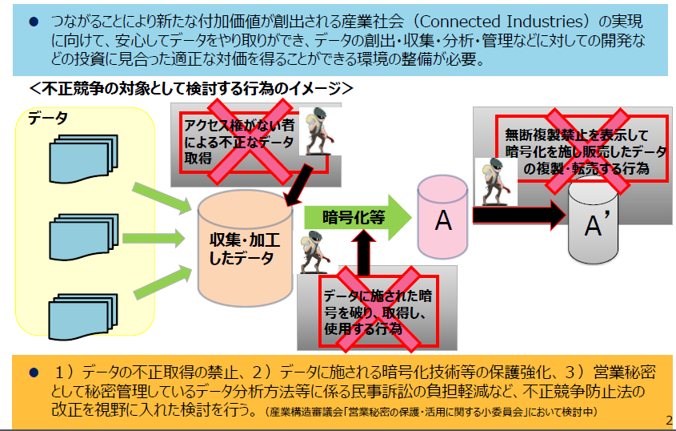
- 利用権限に関する契約の在り方
- データの取扱いに関しては、他者とデータを融通し合う商慣行や取決めが根付いておらず、契約当事者間でのデータを巡る権利関係の整理・明確化も必ずしも進んでいない。
- 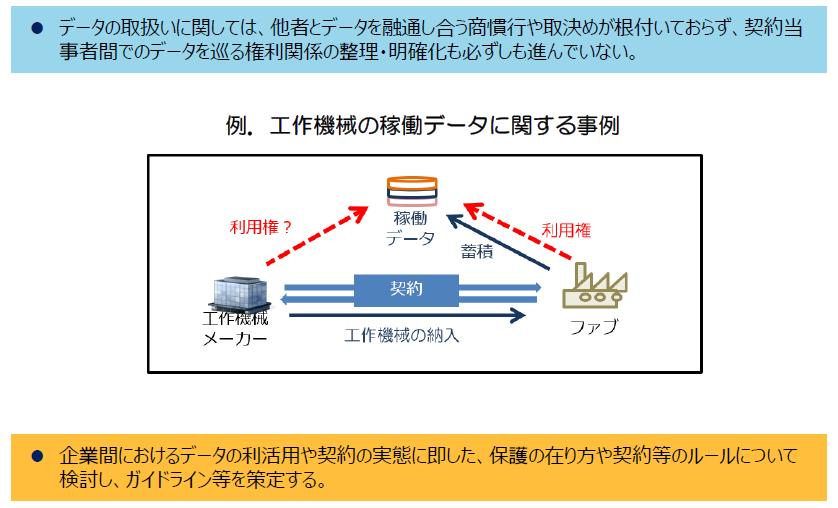
- 企業間におけるデータの利活用や契約の実態に即した、保護の在り方や契約等のルールについて検討し、ガイドライン等を策定する。
- 産業財産権の対象としてのデータの取扱いの明確化
- 構造を有するデータについては、特許の対象となり得るが、具体的にどのような構造を備えれば特
許の対象となるのか、分かりづらい。 - 審査での判断手法を示すべく、審査ハンドブックでわかりやすい事例を公表済（平成29年3月）。
- 今後も権利取得の予見性を高める取組を行う。
- IoTを活用したビジネスモデルを支える知財システムの在り方
- どのようなビジネス関連発明が特許されるのか、取得した特許をどう活用すればいいのか分かりづらい。
- IoT化はあらゆる技術分野に及ぶため、先行技術調査や審査の困難性が増している。

- ソフトウェア関連発明に係る審査基準の点検を行う。（平成29年度中）
- IoTを活用したビジネス関連発明の特許の活用方法の整理を行う。（平成29年度中）
- IoT関連技術用に新設した特許分類を特許文献に対して着実に付与する。
- 分野横断的なIoT関連発明に対応するため審査体制を整備する。（平成29年度中）
- 国境をまたいだ侵害行為に対する権利保護の明確化
- 特許発明の構成要件の一部が日本国外(例国外サーバ)で実施された場合に、特許権侵害に該当しないと判断されるおそれがある。

- 厳格な属地主義にとらわれずに、特許発明の実施地が日本国内であると柔軟に解釈することが考えられる。
- 他国における法適用の状況や、今後の裁判例の蓄積等を注視しつつ、引き続き検討を行う。
- 将来的なAIによる発明等の産業財産権上の取扱いの明確化
- AIの技術進展により人間の関与が小さくなった創作に関し、成果物として得られた発明等の取扱いや、発明者の特定等について、論点を整理する必要がある。

- AIを活用した創作には、現時点では人間の関与が必要であり、現行法で保護し得る。
- AIが自律的に創作するというようなパラダイムシフトが現実になると見込まれた時点で、改めて制度の在り方の検討を行う。
- 3Dプリンティング用データの産業財産権上の取扱いの明確化
- 産業財産権を有する物品が3Dデータを介して複製された場合、三次元データの作成者等に対し、間接侵害を訴えることができるか否かを整理する必要がある。

- 「プログラム等」に該当する3Dデータは、保護の客体にも、間接侵害を構成する「物」にもなりうる。
- データ・データ構造については、審査での判断手法を示すべく、審査ハンドブックでわかりやすい事例を公表済（平成29年3月）。
- 今後、社会的なニーズが高まった場合には、必要な措置について検討を行う。
- 標準必須特許を始めとする多様な特許紛争の迅速・簡便な解決①
- IoTの普及に伴い、様々なつながりが増加する中、知財（特に情報通信技術を利用する分野）の管理コストが増大するおそれ。米国では、パテント・トロール※による濫用的な権利行使が社会問題化
- つなげる社会インフラの一部を構成する規格について、その実施に必要な特許をめぐる紛争が多発・長期化すれば、経済・産業に悪影響が及ぶおそれ

- 標準必須特許をめぐる紛争を対象とし、行政が適正なライセンス料を決定するADR※制度（標準必須特許裁定）の導入を検討
- 標準必須特許を始めとする多様な特許紛争の迅速・簡便な解決②
- IoTの普及に伴い、中小・ベンチャー企業を含む多様な企業間の連携が増加する中、知財の管理コストが増大するおそれ
- 特に、中小・ベンチャー企業は、交渉や訴訟への対応に当たり困難に直面する可能性
- 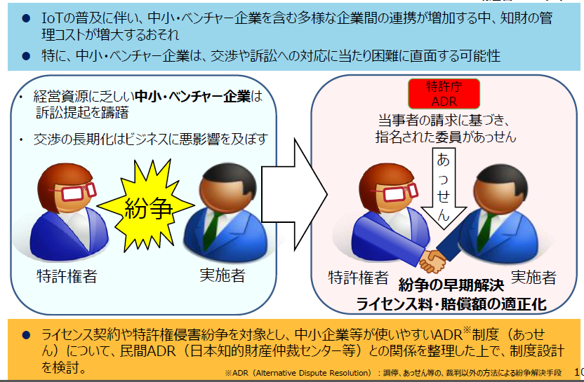
- ライセンス契約や特許権侵害紛争を対象とし、中小企業等が使いやすいADR※制度（あっせん）について、民間ADR（日本知的財産仲裁センター等）との関係を整理した上で、制度設計を検討。
- 新市場創造型標準化制度や国立研究開発法人を活用した業種横断プロジェクトの推進
- 研究開発から標準化等が並行的に推移する中、①標準化の対象拡大（システム分野への広がり）、②標準獲得手法の複線化（デジュール＋フォーラム／コンソーシアム、デファクト）に対応する必要がある。

- 「新市場創造型標準化制度」の活用や、国立研究開発法人を活用し、業種横断プロジェクトとして組成すべき案件の検討を行う等、官民の標準化体制を強化する。
- 国際標準化を推進するための体制・人材育成の在り方
- 欧米の戦略的な標準化や新興国の対応に対抗するため、標準化人材を確保・育成する必要がある。

- 産学官から構成される標準化官民戦略会議の下に設置された標準化人材育成WGにおいて策定した「標準化人材を育成する3つのアクションプラン」（平成29年1月）等に基づき標準化人材育成の取組の強化する。
- 標準関連業務に関与する知財に関する専門家としての弁理士の役割を明確化する。
- 中小・ベンチャー企業等における今後の対応

- 第四次産業革命の下で中小・ベンチャー企業等を取り巻くビジネス環境は変化
- 課題と対応策
- IoT化に対応したビジネスに必要な特許を国内外で取得できていない。知財の重要性に関する認識が不十分
- 「地域知財活性化行動計画」（2016年９月策定）に基づいた、国内外での特許取得支援や、相談から出願、侵害対策まで一体となった海外展開支援の活用促進
- 技術競争力の獲得による市場拡大
- 新市場創造型標準化制度を利用した迅速な標準化の実現により、市場拡大を支援
- 中小・ベンチャー企業と大企業との連携促進
- 知財のマッチング等の推進
- 連携の際の留意点や連携で生じた懸念等に関する相談を知財総合支援窓口で受付
- 営業秘密の保護・管理に関する普及啓発
- 大企業が中小・ベンチャー企業との積極的な連携を通じて挙げた顕著な実績を知財功労賞の選考に反映
- 第四次産業革命に対応するための支援にあたっては、中小・ベンチャー企業等の実情を考慮する。
- 科学技術イノベーション総合戦略2017（案）【2017年4月21日】
- ５か年にわたる第５期科学技術基本計画（2016～2020年度）の下、科学技術イノベーション総合戦略を毎年度閣議決定し、来年度に向けて重きを置くべき取組を示す。我が国を「世界で最もイノベーションに適した国」に変革すべく、以下の取組を推進。
- 第１章重点事項
- 世界に先駆けてSociety 5.0を実現するために特に重要な事項。以下に加え、卓越した研究拠点や多様な学術研究を生み出す研究環境を確保することも重要。
- （１）Society 5.0の実現
- ・政府、産業界、学術界が一体となり国民参加の下で推進→若手研究者やベンチャー企業などのチャレンジを誘発
- ・関係省庁等の取組を基礎研究から実用化まで一気通貫で実施→SIP（戦略的イノベーション創造プログラム）に関係省庁等の取組の方向性を合わせ推進
- ・Society 5.0のコンセプトを世界に共有すべく発信
- （２）「科学技術イノベーション官民投資拡大イニシアティブ」の着実な実行
- ＧＤＰ600兆円経済の実現に向け、総合科学技術・イノベーション会議（CSTI）の司令塔機能を強化し、３つのアクションを推進
- ①予算編成プロセス改革アクション
- ・政府研究開発投資をテコとして民間研究開発投資を誘発
- ・「研究開発投資ターゲット領域」を設定し、同領域への政府研究開発投資を重点化
- ・ＳＩＰ型マネジメントの各省への展開、ステージゲート評価の導入
- →ＣＳＴＩの司令塔機能の強化
- ②研究開発投資拡大に向けた制度改革アクション
- ・大学と国研の聖域なき改革の断行と産学連携の深化
- ・「組織」対「組織」の産学連携の促進
- ・多様な資金の獲得に向けた取組の充実
- ・評価性資産（土地・株等）の寄附拡大
- ・公共調達の活用等による中小ベンチャー企業の育成・強化
- ・技術シーズとニーズの実効あるマッチングの推進
- ・イノベーションによる地方創生の推進
- ・産学官連携による科学技術イノベーションを支える人材の育成促進
- ③客観的根拠に基づく効果的な官民研究開発投資拡大アクション
- ・政府研究開発投資や政策効果等の「見える化」、適切な資源配分や評価の実現
- ・重要な政策課題の判断材料を提供するエビデンスシステムの構築と活用
- ・基本計画に基づく指標の継続的な検討、データの把握・公表によるフォローアップ
- →客観的根拠に基づく政策のPDCAサイクルを実現
- Society 5.0とは

- 第５期科学技術基本計画で提示された未来社会の姿。狩猟社会、農耕社会、工業社会、情報社会に続く、以下のような新たな経済社会をいう。
- ①サイバー空間とフィジカル空間を高度に融合させることにより、
- ②地域、年齢、性別、言語等による格差なく、多様なニーズ、潜在的なニーズにきめ細かに対応したモノやサービスを提供することで経済的発展と社会的課題の解決を両立し、
- ③人々が快適で活力に満ちた質の高い生活を送ることのできる、人間中心の社会
- 第２章未来の産業創造と社会変革に向けた新たな価値創出の取組

- （１）未来に果敢に挑戦する研究開発と人材の強化
- ・ＩｍＰＡＣＴの継続的な運用の改善を通じた更なる発展
- ・挑戦的研究開発を推進するプログラムの展開の促進
- （２）新たな経済社会としての「Society 5.0」を実現する
- ・新たな価値創出を容易とするプラットフォームを構築
- ・「高度道路交通システム」、「エネルギーバリューチェーンの最適化」、
- 「新たなものづくりシステム」をコアシステムとして開発
- ①新たな価値やサービスの創出の基となるデータベースの構築と利活用
- ・共通に活用可能な下記データベースの構築と利活用を先行的に推進（SIPの取組も活用）
- ・Ｇ空間や自動走行用地図等を基にした「地理系データベース」、気象データ及び衛星等による「環境系データベース」、サイバー攻撃等の情報収集に役立つ「サイバーセキュリティ系データベース」の構築
- ②プラットフォームを支える基盤技術の強化
- ・サイバー空間関連基盤技術の強化（ＡＩ技術、ネットワーク技術、ビックデータ解析技術等）
- ・人工知能技術戦略会議策定の産業化ロードマップ等を国家戦略とし、研究開発から社会実装まで政府一体で推進
- ・フィジカル空間関連基盤技術の強化（ロボット技術、デバイス技術、素材・ナノテクノロジー、光・量子技術等）
- ③知的財産戦略と国際標準化の推進
- ・競争領域と協調領域の見極め
- ・データベース構築、データ利活用を推進するインターフェース、データフォーマット等の標準化を推進
- ④規制・制度改革の推進と社会的受容の醸成
- ・AIやロボットを活用する現場の課題を踏まえて、制度の見直しやルールの策定等を先行的に検討
- ・科学技術イノベーションの進展による倫理的視点や社会的影響を含め、産業界、学術界を交えて包括的に研究を実施
- ⑤能力開発・人材育成の推進
- ・IｏＴ等を通じた新ビジネスの創出を担う人材等の育成
- ・高度化する脅威に対するサイバーセキュリティの人材育成
- ・数理科学や計算科学技術、データサイエンスの振興や人材育成
- 第３章経済・社会的課題への対応
- （１）持続的な成長と地域社会の自律的な発展
- ①エネルギー、資源、食料の安定的な確保
- ⅰ）エネルギーバリューチェーンの最適化
- （エネルギープラットフォームの構築/クリーンなエネルギー供給の安定化と低コスト化/水素社会の実現に向けた新規技術や蓄電池の活用等によるエネルギー利用の安定化/革新的な材料・デバイス等の幅広い分野への適用/エネルギー・環境イノベーション戦略の推進）
- ⅱ）スマート・フードチェーンシステム
- （バイオテクノロジーによる生物機能の高度利用/次世代育種システム/ニーズオリエンティッドな生産システム/加工・流通システム/実需者や消費者への有益情報伝達システム）
- ⅲ）スマート生産システム
- （ＡＩ、ＩｏＴ、ビックデータ解析等を活用した生産性向上）
- ②超高齢化・人口減少社会等に対応する持続可能な社会の実現
- ⅰ）世界最先端の医療技術の実現による健康長寿社会の形成
- ⅱ）高度道路交通システム
- （自動走行システムに係る大規模実証実験等の開始、関連技術・システムの開発・実証の推進、応用実装・ビジネスモデルの確立）
- ⅲ）健康立国のための地域における人とくらしシステム
- （ＩＣＴ等の活用による健康等情報の利活用の推進/支援を必要とする者の自立促進及び看護・介護等サービスの支援技術/人にやさしい住宅・街づくりに資する研究）
- ③ものづくり・コトづくりの競争力向上
- ⅰ）新たなものづくりシステム
- （サプライチェーンシステムのプラットフォーム構築/革新的な生産技術の開発）
- ⅱ）統合型材料開発システム
- （信頼性の高い材料データベースの構築/高速で高効率な材料試作計測・評価技術の確立）
- （２）国及び国民の安全・安心の確保と豊かで質の高い生活の実現
- ①効率的かつ効果的なインフラ維持管理・更新・マネジメントの実現
- （構造物の劣化・損傷等を正確に把握する技術/補修・更新の必要性を判断する評価技術/強度や耐久性を付与する技術/アセットマネジメントシステムの構築）
- ②自然災害に対する強靱な社会の実現
- （「予防力」「予測力」「対応力」の向上/府省庁連携災害情報共有方式の導入推進）
- ③国家安全保障上の諸課題への対応
- （安全保障関係/テロ対策関係）
- ④おもてなしシステム
- （多言語音声翻訳システム/空間映像システム）
- （３）地球規模課題への対応と世界の発展への貢献
- （地球環境情報プラットフォームの構築/生物多様性の保全を促す情報基盤の構築）
- （４）国家戦略上重要なフロンティアの開拓
- （民間宇宙ビジネスの拡大に備えた関連規制の整備等）
- 第４章科学技術イノベーションの基盤的な力の強化
- （１）人材力の強化
- ①知的プロフェッショナルとしての人材の育成・確保と活躍促進
- ・国立大学や国研における先駆的な人事政策の促進（任期制若手研究者等のテニュア転換等）
- ・組織の新陳代謝を促す制度（シニア研究者等の任期付への転換等）による若手のポスト確保
- ・人材育成に資する産学協同の研究開発投資の促進
- ②人材の多様性確保と流動化の促進
- ・女性リーダーの登用促進、女性が継続的に活躍できる環境整備
- ・国外の優秀な研究者の受入れ及び国内への定着を促進する環境整備
- ・産学官の壁を越えた人材流動化を促進する制度（ｸﾛｽｱﾎﾟｲﾝﾄﾒﾝﾄ制度等）の導入促進
- （２）知の基盤の強化
- ①イノベーションの源泉としての学術研究と戦略的・要請的な基礎研究の推進
- ・大学等が改革を断行し、民間とパートナーシップを築き、基礎研究に民間の投資を呼び込む取組の加速
- ②研究開発活動を支える共通基盤技術、施設・設備、情報基盤の戦略的強化
- ・ビックデータに対応した情報基盤等の強化
- ③オープンサイエンスの推進
- ・国際的なルールメイキングへの対応と公的資金の研究成果のオープン化（データプラットフォームの整備等）
- （３）資金改革の強化
- ①基盤的経費の改革
- ・大学や国研における長のリーダーシップによる改革の取組推進
- ②外部資金獲得の強化による資金源の多様化
- ・大学と同窓会組織とのつながりの強化など寄附が持続的に促進されやすい文化・環境の醸成
- ・評価性資産（土地・株等）の寄附拡大に向けた分析と評価性資産の寄附を行いやすい制度の在り方を検討
- ・外部資金の獲得に積極的な大学等の事例収集と周知
- ・国立大学が保有する資産の利活用促進と老朽化対策等による施設機能向上、ベンチャー企業等へのインキュベーション施設等の貸付の推進
- ③公募型研究資金の改革
- ・公募型研究資金のより効果的・効率的な予算執行の実現
- ④国立大学改革・国研改革と研究資金改革との一体的推進
- ・民間から大学・国研等への投資３倍増の実現に向けた検討
- ・国研によるベンチャー企業等への自己資金等を活用した出資機能の強化
- ・ライセンス等の対価としての株式、新株予約権の取得と長期保有の在り方の検討
- 第５章イノベーション創出に向けた人材、知、資金の好循環システムの構築
- （１）オープンイノベーションを推進する仕組みの強化
- ・「組織」対「組織」の大型の産学官共同研究を推進
- ・部局横断的に研究者を組織、研究開発を集中管理する組織の設置支援
- ・技術シーズとニーズの実効あるマッチングの推進
- （２）新規事業に挑戦する中小・ベンチャー企業の創出強化
- ・小・中・高等学校から大学までを通じて起業家マインドを持つ人材の裾野拡大
- ・公共調達の活用等による中小ベンチャー企業の育成・強化
- ・大学発ベンチャー等に係るデータベース構築、ベンチャーキャピタルとのマッチングの推進
- （３）イノベーション創出に向けた知的財産・標準化戦略及び制度の見直しと整備
- ・ビックデータ、ＡＩ等に国際的視座から対応した知財システムの構築
- ・標準化人材の育成や戦略的な標準化活動など国際標準化の変化への対応
- （４）「地方創生」に資するイノベーションシステムの構築
- ・地域経済の牽引役となる中核企業の発掘、一貫した成長支援
- ・地域の強み、特性を踏まえた科学技術イノベーション施策による地方創生
- （５）グローバルなニーズを先取りしたイノベーション創出機会の開拓
- ・グローバルニーズを先取りする研究開発や新ビジネスの創出に向けた分析体制の構築
- 第６章科学技術イノベーションの推進機能の強化
- ・大学と国研の聖域なき改革の断行
- ・研究開発の特性を踏まえた政府調達の手続の迅速化
- ・実効性ある科学技術イノベーション政策の推進と司令塔機能の強化
-
- 1．背景
- 「第4次産業革命」とも呼ぶべきIoT、ビッグデータ、ロボット、人工知能（AI）等による技術革新は、従来にないスピードとインパクトで進行しています。この技術革新を的確に捉え、これをリードするべく大胆に経済社会システムを変革することこそが、我が国が新たな成長フェーズに移行するための鍵となります。
- 産業構造審議会 新産業構造部会では、昨年8月より「新産業構造ビジョン」の策定に向けた議論を重ね、今般、中間整理を行いました。

- 2．中間整理のポイント
- 1．第4次産業革命のインパクト
- 2．我が国の基本戦略
- 3．第4次産業革命による社会の変革と産業構造の転換
- 4．第4次産業革命による就業構造転換
- 5．産業構造・就業構造の試算
- 6．我が国の具体的戦略
- ①データ利活用促進に向けた環境整備
- • データプラットフォームの構築、データ流通市場の創成
- • 個人データの利活用の促進
- • セキュリティ技術開発や人材育成等の強化
- • 第4次産業革命における知的財産政策の在り方
- • 第4次産業革命に対応した競争政策の在り方
- ②人材育成・獲得、雇用システムの柔軟性向上
- • 新たなニーズに対応した教育システムの構築
- • グローバルな人材獲得
- • 多様な労働参画の促進
- • 労働市場・雇用制度の柔軟性向上
- ③イノベーション・技術開発の加速化（「Society5.0」）
- • オープンイノベーションシステムの構築
- • 世界をリードするイノベーション拠点の整備・国家プロジェクト構築・社会実装の加速（人工知能等）
- • 知財マネジメントや国際標準化の戦略的推進
- ④ファイナンス機能の強化
- • リスクマネー供給に向けたエクイティファインナンスの強化
- • 第4次産業革命に向けた無形資産投資の活性化
- • FinTechを核とした金融・決済機能の高度化
- ⑤産業構造・就業構造転換の円滑化
- • 迅速・果断な意思決定を可能とするガバナンス体制の構築
- • 迅速かつ柔軟な事業再生・事業再編等を可能とする制度・環境整備
- ⑥第4次産業革命の中小企業、地域経済への波及
- • 中小企業、地域におけるIoT等導入・利活用基盤の構築
- ⑦第4次産業革命に向けた経済社会システムの高度化
- • 第4次産業革命に対応した規制改革の在り方
- • データを活用した行政サービスの向上
- • 戦略的な連携等を通じたグローバル展開の強化
- • 第４次産業革命の社会への浸透
- 人工知能技術戦略（案）
-
-
- 構成
- イノベーション創出
- I-3グローバル市場をリードする知財・標準化戦略の一体的推進
- ・総合的な知財マネジメントの推進（知財に加えデータ・標準等）
- ・国立研究開発法人を活用した業種横断的な標準化の推進、人材育成
- I-2 知財システム基盤の整備
- ・証拠収集手続の強化
- ・ＡＤＲ制度（標準必須特許裁定）の創設
- I-1 データ、人工知能の利活用促進による産業競争力強化に向けた知財制度の構築
- ・データ利用の契約ガイドラインの策定
- ・不正競争防止法改正（データの不正取得等の禁止等）
- ・著作権法改正（柔軟性のある権利制限規定の整備）
- ・ＡＩ学習済モデルの特許化の具体的要件や保護範囲の検討
- Ｉ第４次産業革命（Society5.0）の基盤となる知財システムの構築
- 地方創生
- II-2地方・中小企業による知財活用と産学・産産連携の推進
- ・中小企業への知財意識の普及啓発、知財を活用した海外展開支援
- ・産学連携の橋渡し・事業化支援
- II-1 「攻め」の農林水産業・食料産業等を支える知財活用・強化
- ・地理的表示(GI)や植物品種の国内外での保護、相談体制の充実
- ・我が国農林水産物の強みをアピールするJAS規格の制定
- ・データ等を活用したスマート農業の推進
- II-3 「国民一人ひとりが知財人材」を目指した知財教育・知財人材育成の推進
- ・新学習指導要領における知財教育の充実
- ・「知財創造教育推進コンソーシアム」によるカリキュラム・教材開発
- ・「地域コンソーシアム」構築
- ＩＩ知財の潜在力を活用した地方創生とイノベーション推進
- 文化創造
- III-1 コンテンツの海外展開促進と産業基盤の強化
- ・「クールジャパン官民連携プラットフォーム」、地方版クールジャパン会議と拠点構築・相互連携
- ・コンテンツ分野の人材育成・教育機関との連携
- III-2 映画産業の振興
- ・制作支援強化や資金調達の多様化による中小制作会社等の海外展開促進
- ・ロケ撮影の環境改善に係る官民連絡会議
- III-3 デジタルアーカイブの構築
- ・国として分野横断統合ポータルを構築し、産学官連携の下、研究・ビジネス・インバウンド等に活用
- ＩＩＩ２０２０年とその先の日本を輝かせるコンテンツ力の強化
- 本文
- はじめに
- I．第４次産業革命（Society5.0）の基盤となる知財システムの構築
- １．データ・人工知能（AI）の利活用促進による産業競争力強化に向けた知財制度の構築
- （１）現状と課題
- （２）今後取り組むべき施策
- ２．知財システム基盤の整備
- （１）現状と課題
- （２）今後取り組むべき施策
- ３．グローバル市場をリードする知財・標準化戦略の一体的推進
- （１）現状と課題
- （２）今後取り組むべき施策
- II．知財の潜在力を活用した地方創生とイノベーション推進
- １．攻めの農林水産業・食料産業等を支える知財活用・強化
- （１）現状と課題
- （２）今後取り組むべき施策
- ２．地方・中小企業による知財活用と産学・産産連携の推進
- （１）現状と課題
- （２）今後取り組むべき施策
- ３．「国民一人ひとりが知財人材」を目指した知財教育・知財人材育成の推進
- （１）現状と課題
- （２）今後取り組むべき施策
- Ⅲ．2020 年とその先の日本を輝かせるコンテンツ力の強化
- １．コンテンツの海外展開促進と産業基盤の強化
- （１）現状と課題
- （２）今後取り組むべき施策
- ２．映画産業の振興
- （１）現状と課題
- （２）今後取り組むべき施策
- ３．デジタルアーカイブの構築
- （１）現状と課題
- 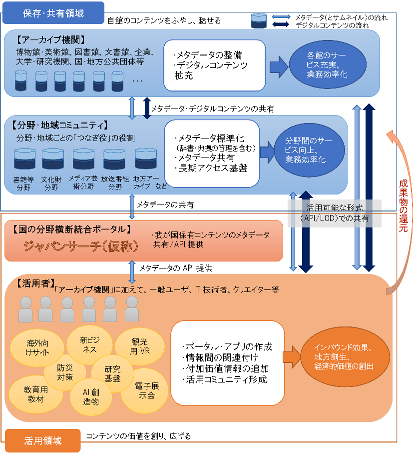
- （２）今後取り組むべき施策
- 我が国における分野横断型統合ポータル構築に向けたアーカイブ間の連携と利活用を促進するため、関係府省において以下の取組を推進することとする。
- ①アーカイブ間連携と利活用の促進
- （産学官でのデジタルアーカイブのフォーラムの開催）
- （デジタルアーカイブ推進のための工程表の作成）
- （国の統合ポータルの構築）
- （国の各アーカイブ機関におけるガイドラインの順守）
- （利活用の推進のための連携）
- （地方におけるアーカイブ連携の促進）
- ②分野ごとの取組の促進
- （分野ごとのつなぎ役による取組と支援）
- （分野横断の取組）
- （書籍等分野）
- （文化財分野）
- （メディア芸術等分野）
- （放送コンテンツ分野）
- ③アーカイブ利活用に向けた基盤整備
- （オープン化の促進）
- （アーカイブの構築と利活用の促進のための著作権制度の整備）
- （利活用の促進のための周辺環境の整備）
- （アーカイブ関連人材の育成）
- 「デジタルトランスフォーメーション」【2016年9月ベイカレント・コンサエルティング】
- 破壊的イノベーションを勝ち抜くデジタル戦略・組織のつくり方
- はじめに
- 破壊的イノベーションの幕開け
- デジタルディスラプター
- 顧客のデジタル武装が進む
- サービスを受ける側のほうが情報量を豊富に持つ
- デジタル時代を勝ち抜く戦略が必要
- 「最新のITを活用し、顧客経験に訴求したサービスを提供すること」
- デジタル化による企業変革を図れ
- 自らが「創造的破壊者」になるデジタル組織を作り、従来の常識を否定して新しいビジネスを創出することが必要
- 第1章デジタル技術が変える近い将来
- デジタル技術の急速な発展
- コンピュータが自分で「概念」を獲得する機械学習ができるようになった
- 産業構造を変革する力
- オープンイノベーションの加速化
- リアルな世界との融合
- カスタマーエクスペリエンスの重要性
- 進化したのは技術だけではなく、それを利用する顧客の考え方や行動も進化した
- 顧客が何に「快適性」「面白さ」を感じるのか
- 顧客が「何に価値を感じるのか」「顧客の嗜好はどのように変化しているのか」
- CXは様々な顧客接点を通じての顧客の実経験である。UIはアプリという顧客接点の一つである。
- デザインとは、顧客に対する一連のサービス
- 「デザイン思考」は、CXに関するエキスパートであるデザイナーの主導でサービスを作り出そうという発想
- デジタル時代における主導権は、サービスを提供する企業側から、サービスを受ける顧客側に移りつつある
- ・・・【まとめ中】
- 第2章デジタル時代に対応できない企業の末路
- 第3章なぜ、デジタル時代への対応が遅れたのか
- 顧客の進化に対する読み違え
- カスタマーエクスペリエンスへの訴求不足
- ITに対する距離感
- 既存概念への固執
- 第4章デジタルトランスフォーメーションの本質
- ビジネスモデルの再定義
- 顧客が中心
- 顧客情報の収集と分析
- データ活用基盤の発達
- エコシステムの加速化
- 第5章デジタル戦略の構築と実行
- デジタル戦略方針の策定
- 徹底したCX向上策
- リアルチャネルとの融合
- デジタルマーケティング
- オープンイノベーション
- 第6章デジタル組織への転換
- ①デジタル戦略組織
- デジタル専門組織の必要性
- CDO（Chief Digital Officer）の設置
- 図5CDOを置く企業が急増している
- 組織形態の例
- 図6 デジタル組織の4形態
- 全社横断組織
- B.事業特化型組織
- C.デジタルイノベーション型組織
- D.機能特化型組織
- 全社横断組織
- B.事業特化型組織
- 図７ 事業特化型の組織の例
- 図8 IT主導型の組織構造
- C.デジタルイノベーション型組織
- 図9 事業のライフサイクルとデジタルイノベーションの役割
- D.機能特化型組織
- ②既存組織との連携
- 経営企画部門との連携
- 事業部門との連携
- IT部門との連携
- ③イノベーションリーダーの育成
- CDOに求められる役割
- 新しいデジタル技術に対する理解
- デジタル技術活用事例の研究
- 会社全体の事業を見据え、リアルとデジタルで発信すべきメッセージを統一
- 各事業部門のビジネスに対する具体的な展開方法の検討（事業部門との共同研究）
- CDO配下のイノベーションリーダー
- 戦略的な育成
- ④デジタル要員の育成
- ビジネスとITをつなげる力
- コアメンバー
- ビジネスアーキテクト
- オペレーションデザイナー
- スーパーエンジニア
- 重要となるマインドセット
- 戦略的育成計画
- ⑤ダイバーシティを受け入れる組織文化の醸成
- 多様性の必然性
- 発散と収束のプロセス
- 非連続性への取組み
- 求心力を働かせる
- 日々の行動の変化
- 経営の役割
- デジタル化の推進
- 現場浸透への徹底
- 社外とのコミュニケーション強化
- チャレンジする風土の構築
- 次世代経営人材の育成
- おわりに